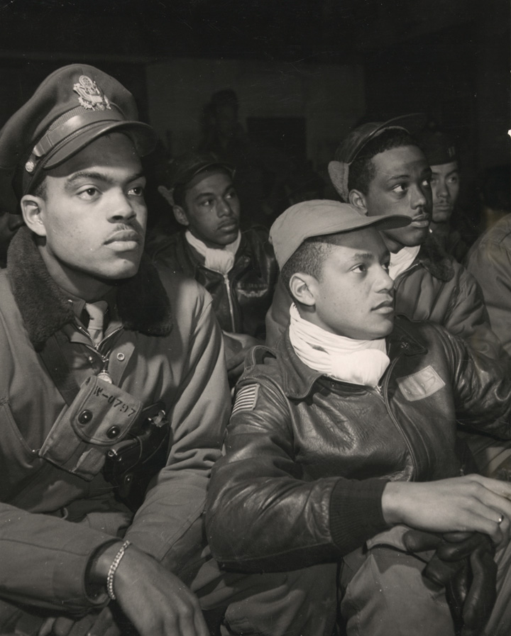

In response to Japanese aggression throughout Asia, the United States placed a trade embargo on the Japanese Empire. President Roosevelt hoped that halting Japan’s access to oil would cripple Japan’s military and halt its aggression in Asia. Instead, it led to a surprise attack by the Japanese against the US naval base at Pearl Harbor in Hawaii on December 7, 1941. America responded with a declaration of war against both Japan and Germany. The declaration revealed that the nation was not yet prepared for a global war. As had been the case in World War I, American leaders quickly sought to mobilize all of the nation’s resources in support of the war effort. For the next four years, American industry concentrated on maximizing production of war materiel while 11 million women and men joined the armed forces.
The American way of war was based on developing an overwhelming force that could defeat an enemy with the minimum loss of life among its own troops. This required a superior amount of weaponry and support material and was also based on training and logistics. As a result, the United States was slow to mobilize and its allies in Europe and Asia were left to fight much of the war on their own until American troops arrived. Once those soldiers arrived, however, the tide of war shifted decisively toward the Western Allies.
The war would have an equally dramatic impact on the American home front. Japanese Americans were forced into internment camps until it was shown that such prejudices did nothing to advance the security of the American homeland. Other forms of discrimination were equally slow in being surmounted, with prohibitions against the service of women and minorities being only partially removed in the face of military necessity. As America raced to maximize its human resources to increase industrial production, it also decided that the price of prejudice was too high and began to celebrate its increasingly diverse workforce.
Ideas about limited government were also tested by the crucible of war. In response to the need to coordinate production and maximize efficiency, the federal government expanded its authority over the private sector. Although some feared that central planning might lead the nation to become more like the socialist and fascist nations of Europe, the American way of preparing for war was also unique. Although the government maintained the coercive power to seize factories it rarely did so, offering instead the possibility of high profits and high wages for those who produced the equipment and weapons it needed. By 1945, the US home front produced approximately half of the world’s weaponry and the empires of Germany and Japan surrendered.
Few Americans were willing to consider military action against the Japanese in 1940 and 1941, and most considered Asian affairs to be of secondary importance to the events in Europe. To the Japanese, however, the United States embargo was an act of aggression that would make its empire vulnerable at the very moment it was expanding throughout Asia. From this perspective, there appeared little reason to maintain diplomatic relations with the United States. The Japanese now viewed the US-controlled Philippines much in the same context as the Dutch, French, and British colonies in Southeastern Asia. Hitler’s war on these European powers could not have occurred at a better time for Japanese imperialists. They convinced the Japanese emperor that their alliance with Germany provided an opportunity for Japanese expansion into Southeastern Asia. With these European nations fighting for their very survival, Japan attacked their colonies throughout the region and seized control of raw materials and trade routes. Before these attacks were launched, however, Japanese officials launched a surprise attack on the United States they believed was necessary to prevent US interference.
With China and the Europe fighting for survival, Japan expected little resistance in Southeastern Asia. In fact, the Japanese recognized that only one major naval power stood in their way of conquest—the United States. Japanese planners recognized that further aggression in Asia might lead to a more aggressive response than a trade embargo. (Historians now know that US military and civilian leaders had already determined not to intervene with military in Asia, even if Japan attacked US bases in the Philippines.) The Japanese fully recognized the industrial power of the United States; however, they believed a sudden and devastating attack on America’s Pacific Fleet at Pearl HarborA surprise attack launched by the Japanese navy on the American Pacific Fleet anchored at Pearl Harbor in Hawaii on December 7, 1941. The attack resulted in the deaths of over 2,000 US servicemen and servicewomen and greatly reduced the effectiveness of the fleet. However, the attack failed to destroy US aircraft carriers and resulted in the US declaration of war against Japan, Germany, and Italy. would cripple the US navy for at least a year. During the interim, Japan planned to complete its conquest of Southeast Asia and build impenetrable defenses throughout the region. America’s first opportunity to launch a counterattack would not occur until the summer of 1943, and by this time, the Americans would be ill-advised to send their newly rebuilt navy into the Japanese stronghold for its second slaughter.
By the winter of 1941, US leaders determined that they would no longer trade with Japan unless they ended their expansionistic campaign. In November, the United States demanded that Japan withdraw from China before any resumption of trade could commence. The talks quickly stalled on this point since the leading reason the Japanese sought oil from the Americans was to facilitate the expansion of their empire. By this time, Japanese forces had been secretly preparing for an attack against Pearl Harbor for over a year. In fact, US intelligence officers intercepted messages warning of the possibility of an attack should trade negotiations fail. Given the proximity of the US-controlled Philippines to Japan, many predicted that any attack would occur on these islands. While the military leaders debated on how to respond to a potential attack on the Philippines, all Pacific bases were ordered to increase their internal security. While officials at Pearl Harbor were on alert for potential acts of sabotage, few even considered the possibility of a carrier-based attack 4,000 miles from the Japanese mainland.
Just before 8:00 a.m. on Sunday, December 7, 350 Japanese warplanes launched in two waves from six aircraft carriers attacked America’s Pacific Fleet anchored at Pearl Harbor. Each of the eight battleships that were present that morning was damaged, while half of them were destroyed. The attack also sunk a dozen other warships and destroyed nearly 200 aircraft. Of the 2,402 US servicemen who perished that day, nearly half were aboard the USS Arizona when a bomb caused its forward ammunition magazines to explode. The Japanese lost only a handful of aircraft in the attack. Their commanders recognized that despite the apparent success of their mission, it had failed to achieve its primary objective of crippling the US Pacific fleet. Although US losses were high, all three of the fleet’s aircraft carriers escaped destruction at Pearl Harbor because they had been out to sea for various reasons.
Figure 8.1
The USS West Virginia burns in the background while a crew saves a navy seaman who was able to escape the destruction.
Hours after the attack at Pearl Harbor began, Japanese warplanes began an assault on US forces stationed in the Philippines. For reasons that are still unclear, General Douglas MacArthur failed to mobilize in preparation for this attack, and Japanese aircraft destroyed most of United States’ Far East Air Force, which was still on the ground. Roosevelt addressed Congress on December 8. The president declared the attack at Pearl Harbor to be a “date which will live in infamy” and requested a declaration of war. Congress agreed, and the United States officially declared that a state of war existed with Japan, as well as Germany and Italy.
The American people overwhelmingly supported their president’s request for war following the attack on Pearl Harbor. Even former isolationists agreed; they could be found among those who joined the military or otherwise helped their nation prepare for the impending struggle. Indignation at the attack soon turned to fear as Japan defeated French, British, and Dutch colonial forces throughout Southeastern Asia. America’s own position in the Pacific was equally perilous. US bases on Guam and Wake Island surrendered to the Japanese. By early 1942, many predicted that a second attack on Pearl Harbor would lead to the capture of Hawaii. Americans on the West Coast feared that a Japanese-controlled Hawaii would be used to stage an invasion of the US mainland.
Figure 8.2

The War Production Board made a number of posters meant to motivate workers in the defense industry by connecting their labor to the war effort. Many of the images depicted laborers directly hurting Hitler or the emperor of Japan by building weapons and equipment.
Following his declaration of war in December 1941, Roosevelt sought ways to convert the United States into “the arsenal of democracy” that supplied America and its European allies with the weapons needed to defeat Hitler’s armies. This vision embodied both the idealism and economic might of the nation. It also demonstrated his belief that the United States was unique in its capacity for both representative government and industrial production. However, America was still mired in the Depression in 1939. Perhaps worse, a vast gulf existed between the desire of Americans to take the war to Japan and Germany and the present state of their army and navy. Roosevelt and Congress responded to the emergency by enlarging the military and expanding the government’s role in the economy in ways never before imagined, even at the height of the New Deal. In the next few years, the United States became the arsenal Roosevelt described. Section 8.3 "D-Day to Victory" examines the expansion of the military and the transition to a wartime economy. Whether this arsenal was truly democratic largely depends on the perspective one considers. Section 8.4 "Conclusion" follows with a review of this question from the perspective of women and minorities.
Figure 8.3

Many of the posters made by the federal government were humorous, such as this poster imploring Americans to make efficient use of everyday products to conserve materials that might instead be used to produce supplies for the military.
Even in the Depression year of 1937, America produced ten times as many automobiles as Germany and Japan combined produced. However, two decades of isolationism kept US military spending low, and few US companies produced combat aircraft, tanks, or other munitions so desperately needed by the United States and its allies. If US factories could quickly transition from producing consumer goods such as automobiles to tanks, ships, aircraft, and trucks for its armed forces, the Allies would quickly enjoy an abundance of military equipment. The revision of the Neutrality Act in 1937 and the abandonment of its restrictions on wartime trade between 1939 and 1941 had already led to increased military production by US companies. In addition, Congress appropriated nearly $2 billion in defense spending in 1940 and another $6 billion the following year. Still, ensuring that most US companies shifted from producing vacuum cleaners to machine guns required more than an increase in military purchase orders. Given the sudden transition back to civilian production after World War I, US companies were hesitant to invest the money needed to convert their factories from building refrigerators to machine guns. Any number of events could lead to the sudden cancellation of military purchase orders, they reasoned, and their companies would then be stuck producing goods that were no longer demanded.
The government also had to contend with the long-term effects of the Great Depression. In 1940, 8 million workers were still unemployed, and half of the nation’s manufacturing plants were producing below half of their maximum capacity. As a result, the federal government took even greater control of the economy than it had during World War I to make sure that its factories were at peak capacity. For example, the federal government ordered the end of civilian auto production in 1942 as a means of ensuring that more military vehicles were built. The government also created a New Deal–like alphabet soup of programs charged with overseeing the transition to full wartime production.
As the war raged in Europe, Roosevelt announced production goals few thought possible. The federal government worked to ensure US businesses met these goals by using a carrot-and-stick approach. Very lucrative contracts became the carrot as the federal budget increased tenfold during the war. These expenditures allowed government purchasing agents to offer lucrative deals to US business leaders, convincing nearly all leading industries to convert to wartime production. The government paid top dollar for all manner of goods from food to flamethrowers while occasionally seizing manufacturing facilities it felt were not being fully utilized.
The Roosevelt administration’s solution to underproductivity thus demonstrated a uniquely American approach that blended free enterprise with unprecedented government intervention. The War Production BoardA federal agency directed with procuring all military supplies and armaments and managing the conversion of factories from civilian production to military production. The board sought to achieve peak efficiency by offering lucrative contracts to businesses producing material considered vital to the war effort while restricting or banning the production of nonessential items. offered tax incentives, loans, and even guaranteed profits to businesses that were now understandably eager to produce the goods the military desired. Other government agencies seized control of commodities markets to make sure that these businesses would have access to the raw materials they needed. The Office of Price AdministrationA federal agency tasked with limiting inflation and profiteering during the war by imposing price limits on scarce items such as oil and tires. The agency also froze prices on food items and rent to prevent speculators from buying up large quantities of vital resources and selling them for much higher prices in a time of national emergency. regulated the cost of these raw materials, as well as the prices of consumer goods, to reduce inflation and prevent price gouging of ordinary consumers.
As a result, corporate profits more than doubled between 1941 and 1945. US business leaders could have never dreamed of such a favorable contract, with nearly every expense related to building or converting existing factories being tax deductible. Other contracts offered guaranteed profits on each item produced for the military. Workers benefited as unemployment became a problem of the past, while wages jumped by 30 percent. Because virtually all segments of the population stood to profit from the government’s economic programs, criticism was limited to those who opposed the principle of government-imposed economic planning and management. Economist Friedrich HayekAustrian economist who argued that central planning could never be as efficient as the free market. The Road to Serfdom argued that complete governmental control of the economy, including central planning over decisions regarding production, distribution, and consumption that typified a Socialist state, would lead to increased governmental control of all aspects of life and eventually lead to totalitarianism. Hayek believed that a free market system with limited governmental regulation of certain functions such as banking provided the best economic results while safeguarding the freedom of the individual. authored The Road to Serfdom in 1944, arguing that complete control of the economy by government was a trademark of dictatorship.
Influenced by Hayek, many Americans were uncomfortable with the sudden expansion of their government’s authority. The War Production Board utilized economic planning that seemed to share similarities with the totalitarian governments of Japan, Germany, and the Soviet Union. At the same time, Americans could point to important differences. Private enterprise still prevailed in nearly every sector of the economy. The federal government rarely used its coercive power to seize a plant or halt a strike, and Americans enjoyed average incomes that were larger than those of German, Italian, and Japanese workers combined. Perhaps most important, the federal government’s plan succeeded in increasing military production without creating major hardships on the home front. Even if certain items like nylons were no longer available to civilians, America’s total output of consumer goods actually increased during every year of the war. If America’s economy could no longer be categorized as free enterprise, it seemed to many that it could not be considered Socialistic either.
Critics who bemoaned the rise of government interference in the economy could offer little rebuttal against the overwhelming statistics of America’s wartime production. As early as 1942, the United States was producing more military equipment than any other nation. By 1945, US factories were responsible for nearly half of the world’s armaments and had out-produced the factories and farms of England, France, Russia, Germany, Italy, and Japan combined. In total, America produced more than 300,000 aircraft, 100,000 tanks and armored vehicles, 22 aircraft carriers, 8,000 transport ships, and 1,000 armed vessels for the navy. Armament plants churned out 40 billion bullets that could be fired by the 20 million rifles that were made. US factories produced a new all-purpose military vehicle known as the jeep every minute, while a new plane took off from runways adjacent to US factories every five minutes. Massive cargo ships that used to take one or two years to complete were now produced in a matter of weeks. Dubbed “liberty ships,” these cargo vessels were indispensable to the American way of war that relied upon overwhelming material supremacy.
US factories were not only more productive than their rivals, but they were also more innovative. Funding for research and development led to the effective military application of technologies such as radar, sonar, proximity fuses, computers, and jet aircraft. The most important new military technology was the realization of an atomic bomb that had only been theorized about by a small number of physicists in the past. The federal government spent more than $300 billion to achieve this mix of production and innovation—more than double the entire federal budget for the last 150 years of the nation’s existence. The result was an undeniable superiority of equipment that would allow US troops to quickly win the war while suffering only a fraction of the casualties of their Russian and Chinese allies. Ill-trained and poorly equipped, tens of thousands of Russian and Chinese soldiers perished each week while awaiting the arrival of US forces.
In retrospect, it is clear that Hitler’s decision to invade Russia bought the United States time to make this amazing economic transition. Russia did not fold as many had predicted, but instead kept the German army occupied for the duration of the war. Few understood the disastrous potential of a stalled Russian offensive more than Hitler did. The Fuhrer’s advisers cautioned Hitler that he would have but one year to defeat Russia. After this time, the combination of US industrial production and Russian manpower might negate the initial momentum and superiority of equipment the Germans enjoyed. Japanese Admiral Isoroku YamamotoJapanese Naval commander who doubted the wisdom of attacking the United States. Sensing that others did not share his concerns, he created a strategy based on seeking a decisive victory over the American Pacific fleet that he hoped would at least temporarily paralyze the US Navy. Understanding that the attack at Pearl Harbor had failed to meet this objective, he hoped to trap and sink the remaining US aircraft carriers in the Battle of Midway. made a similar prediction regarding his nation’s war against the United States. Yamamoto argued that a successful attack against Pearl Harbor would buy the Japanese navy a year of unchallenged supremacy in the Pacific. If the war continued for a second and third year, he warned, America’s industrial would negate its inertia and put the Japanese empire on the defensive. As a result, both Japan and Germany based their 1941 decisions to attack the United States and Russia on their belief that the war would end quickly. Every day that the Russians and Chinese held out against German and Japanese forces provided US factories and military planners with more time to prepare.
America’s military production and preparation was facilitated by massive government spending. Given the dire necessity of building a military and the benefits to workers and industry alike, few criticized the government’s use of borrowed money to finance the war effort. The greatest concern at the time was not the government’s ability to repay this money, but whether the sudden influx of federal spending would lead to inflation. The methods of financing the war, however, absorbed most of the extra money that was moving into the economy.
The Revenue Act of 1942Lowered the minimum income requirement for which wage earners must pay federal tax. Accepted by many as a necessary method to finance the war, the law forever changed the nature of taxation in the United States. doubled the amount of money the government received from individual tax returns and forever changed the nature of income tax in America. The law reduced to $1,200 the amount of money that was exempt from federal taxation for families. Since the average income of an American family was just over $1,200, most full-time wage-earners had not paid any federal tax prior to 1942. The following year, the government mandated that employers withhold taxes from each worker’s paycheck. By taking out small amounts from each check rather than presenting families with a large bill at year-end, this provision helped to ensure that federal taxes were collected. The number of Americans required to file and pay federal taxes jumped from 4 million to 45 million by the end of the war.
Roosevelt and Congress fought a fierce battle regarding these changes to the tax code, with the increasingly conservative House of Representatives and Senate rejecting many of the president’s requests for even steeper tax increases. Roosevelt favored taxation because he feared the consequences of too much borrowing. However, tax increases were a bitter pill for members of the House of Representatives who faced two-year election cycles. Because of these political considerations, the government followed the tradition of financing wars through heavy borrowing. Corporate and personal income taxes financed 45 percent of the war’s cost. The government made up the difference by borrowing nearly $200 billion, 20 percent of which was held by private citizens who had purchased war bonds.
Figure 8.4

Posters produced by the Office of War Information (OWI) urged Americans to purchase war bonds by connecting their investments to the war effort.
As had been the case in previous conflicts, these sales once again served the purpose of mobilizing Americans behind the war effort. Similar to the efforts of George Creel and others during World War I, the government recruited celebrities and athletes to headline bond drives. Purchasing a government bond was more than just a patriotic gesture; bonds represented a secure investment that provided guaranteed repayment with interest. The revenue from these bonds would help many families purchase more goods once the war was over and ensured that civilian production of items such as automobiles and new homes would resume. At the same time, repayment of these bonds decreased the likelihood that federal income tax rates would return to their prewar levels once the war was over.
Contrary to World War I, few Americans questioned the necessity of America’s involvement in the Second World War. The government’s Office of Censorship was limited to monitoring soldiers’ letters and preventing the release of sensitive information that might be of value to the nation’s enemies. The Office of War Information (OWI)A government agency tasked with improving morale and managing the public image of the war effort. The attack against Pearl Harbor resulted in few Americans opposing the war itself, freeing the Office of War Information to mobilize public opinion in support of various government initiatives rather than engaging in censorship. The OWI made films, radio broadcasts, pamphlets, and other forms of wartime advertisements, but it is most remembered for its colorful and creative posters. A division of the OWI created pamphlets and other materials distributed overseas designed to reduce the morale of enemy troops and civilians. was tasked with mobilizing the already favorable public opinion of the war effort into support for various government initiatives. The transition from censorship in World War I to a more tolerant view of dissent is demonstrated by a 1943 Supreme Court ruling that tolerated those who refused to salute the flag for religious or personal beliefs. The decision illustrated a departure from the state-mandated displays of nationalistic support in Germany and Japan, a theme that was often featured in OWI releases lauding America’s toleration for dissent in contrast to the totalitarianism of her enemies. In general, OWI propaganda sought to portray the war as a moral struggle between freedom and totalitarianism. Most OWI posters and films were upbeat, praising America’s industrial workers and soldiers and encouraging them to continue their efforts, rather than demonizing the enemy. Yet when it came to the war in the Pacific, OWI propaganda pandered to existing prejudices against the Japanese. Posters and films alternated between portraying the Japanese as diminutive monkeys or rats and hulking ape-like beasts. The imagery was increasingly violent, such as a poster advertising war bonds that depicted a caricatured Japanese head being decapitated from a rat’s body. Critics pointed out that anti-German posters were restricted to demonic images of Nazi leaders, while the war against Japan was increasingly presented as a war against a subhuman race.
The OWI employed a few thousand writers and artists who tended to favor not only the war effort but also the ideas of New Deal liberals. Most OWI publications promoted noncontroversial subjects such as general support for the troops, conservation of materials, and a partnership between industrial workers and the troops on the front line. Some OWI publications also sought to promote more liberal ideas, such as the notion that fair pay, medical care, and full employment were rights for which Americans were fighting. As a result, the OWI budget was vastly reduced by an increasingly conservative Congress.
The government granted wider latitude to conscientious objectors and dissenters than in previous wars, largely because so few Americans doubted the basic premise of their nation’s participation in the war. Contrary to World War I, America had been attacked and faced a clear moral decision to intervene in both Asia and Europe against the rise of totalitarian regimes. Even reducing the funding for the OWI did little to reduce prowar propaganda as private entities also sought to promote the war. Newspapers were full of daily editorials on the need to fight the Germans and Japanese, and Hollywood produced a litany of films eulogizing the valor of soldiers. While most of this propaganda focused on support for soldiers and celebration of industry, some of this propaganda played to the anger of Americans after Pearl Harbor and even pandered to ethnic and racial hatred.
As America prepared to enter the war, Roosevelt indicated that the nation would not simply match the production of its enemies but instead would crush those enemies with overwhelming material superiority. At its peak, the nation rolled out a new tank and airplane every five minutes. This superiority of equipment kept US casualties low compared with Russia, China, and the Axis Powers. Such production could only be achieved by the addition of 15 million new workers entering US factories for the first time during the war years. Women represented half of these new employees and one-third of the total civilian work force. Many women continued to work in service, clerical, education, and nursing fields, but many of the 6 million women who joined the paid workforce for the first time took up manufacturing jobs traditionally held by men. For many women, entrance into the paid workforce was both ennobling and exhilarating, opening new opportunities and providing a measure of financial independence. Even if only 10 to 20 percent of working women were employed within the defense industries, the can-do image of Rosie the RiveterA mythical female steelworker who came to represent the millions of American women who entered jobs in factories during World War II. A cultural icon whose name derived from popular song lyrics, real life “Rosies” were women who worked jobs previously open only to men. both represented and inspired many women, whether they donned overalls and “manned” the assembly lines or worked more traditional jobs. Minority women seldom experienced the same opportunities for direct upward mobility, yet for many, the war provided the first time a US factory would consider hiring a woman of color for any position at any wage.
Figure 8.5
One of many real-life “Rosie the Riveters,” this woman built military aircraft at a Lockheed plant in Burbank, California.
Despite the entrance of approximately 2 million women into jobs traditionally held by men, wartime propaganda minimized the challenge this trend represented to traditional images of gender. Women’s work in defense factories was portrayed as falling within the larger role of women as guardians of the home and family. The war temporarily redefined the domestic sphere to include the home front as well as the household. Men were still in charge and the defenders of the nation, Americans were assured by the prevailing culture, as women entered factories only to assist the men who performed the more difficult and essential tasks. Female production of armaments that were used by men to defend the nation was viewed as compatible with prevailing labor arrangements where women assisted men. A woman on a bomber assembly line performed simple, mindless tasks in support of a skilled pilot flying over enemy territory, this line of reasoning suggested, just as a female secretary might perform routine tasks in support of her male boss, who skillfully navigated the cutthroat world of business. The internal contradictions of this reasoning were evident to many, yet the culture and limited duration of the war conspired to minimize wartime challenges to American notions of work and gender.
Despite the unprecedented number of women in the workforce, American men and women alike were reluctant to abandon traditional lines between male and female labor. The majority of women between the ages of eighteen and sixty-five did not enter the paid workforce at any time during the war. The majority of women who did indicated repeatedly in editorials and opinion polls that they agreed with prevailing notions insisting that female labor in factories was a temporary necessity due to the 16 million men and women who served in the armed forces between 1941 and 1945. These female laborers averaged only 65 percent of the wages paid to men for the same work. They were also usually expected to quit these jobs after the war, although some businesses reasoned that continuing to employ women might provide significant cost savings. Most of the women in these fields voluntarily left their jobs. However, societal expectations and the likelihood that most women would be fired from industrial jobs if they did not resign makes it difficult to determine how voluntarily American women retreated from the factory to the home.
Labor unions had benefitted from the enrollment of female workers, yet they were still dominated by men and supported the idea that returning veterans should replace their former sisters of toil. During the war years, however, the unions actively sought to adapt to the changes around them by forming partnerships with government and management. Labor leaders recognized the need to maximize wartime production as a national defense issue and as a means of benefiting their members. As a result, nearly every union leader pledged not to support labor strikes and resolved to work with the National War Labor Board (NWLB)A federal agency established in World War I and reestablished by President Roosevelt in World War II to arbitrate disagreements between labor and management. As was the case in World War I, the primary objective of the NWLB was to prevent work stoppages that might derail production of essential wartime supplies and munitions. to arbitrate disputes with employers.
In return for labor’s pledge to avoid strikes, the government agreed to regulate consumer prices to ensure that inflation did not dilute worker wages. The federal government even purchased food directly from farmers and sold it to retailers at a financial loss to keep consumer prices down. More importantly to labor leaders, the government also passed a “maintenance of membership” rule that required all new employees in factories represented by a union to join that union. This arrangement satisfied most labor leaders as their membership rolls expanded. Due to rising wages and the resulting power of the unions, most union members enjoyed significant pay increases and even new benefits, such as pensions and health insurance.
Figure 8.6

This poster urges workers to be careful with their equipment. It also presents the idea that any kind of work stoppage would harm the war effort—a clear attempt to also discourage labor strikes.
Workers in some industries felt that their pay increases failed to keep pace with corporate profits. Others cited mandatory overtime, assembly line speed-ups, and the occasional wage freezes in some industries as mandated by NWLB agreements. John L. Lewis, head of the United Mine Workers, believed that the NWLB cared little for the miners of his organization. Lewis argued that his miners were not enjoying their proportional share of wartime prosperity given the higher prices of coal, steel, and other mining commodities. Lewis ordered a strike that halted mining operations throughout the country and threatened to halt defense production. As a result, the miner’s strike sent panic through the nation and led many to equate labor activism with treason. Given the nation’s immense need for coal, iron ore, copper, and other metals, Lewis won significant concessions for his members. The fallout from this strike, however, caused the entire labor movement to lose public support. Congress also responded by passing several laws that limited the power of unions for the duration of the war.
Even before the United States joined the war, Congress approved the Selective Service Act of 1940 to address concerns that the army might not be able to defend itself if the war spread from Europe to North America. The law required young men between the ages of twenty-one and thirty-five to register for the draft. The law also classified registrants into four categories. Those who were deemed physically and mentally fit who were single and not employed in an occupation deemed “critical” by the War Department were placed into Category I. Those so placed could expect a draft notice and often chose to enlist rather than wait to be called by their Uncle Sam. Deferments for married men proved temporary, especially after the government noticed a sudden spike in weddings that seemed curiously related to the arrival of draft notices. Fatherhood was the next deferment to succumb to military necessity. However, during the first years of the war, so few dads were drafted that newborns were occasionally nicknamed “weatherstrips” because they insulated families by keeping their fathers out of the draft.
The nation had only 1.6 million soldiers and sailors at the time of the attack on Pearl Harbor, half of whom had enlisted after Roosevelt’s enactment of a peacetime draft in 1940. This number would increase nearly tenfold by the end of the war, with 150,000 recruits entering one of 250 training camps set up around the country each week. Most of these recruits had never been far from home but were now sharing bunks and foxholes with others of different ethnic and religious backgrounds. As a result, the war led many to broaden their horizons and shed their prejudices, while others simply became more distrustful of those who seemed different from themselves.
Figure 8.7
A 1942 recruiting poster for the US Army Air Corps. The United States Air Force did not become its own independent branch of the armed services until after World War II.
African American troops were the only soldiers explicitly required to endure segregation. However, many West Coast units were composed entirely of Mexican Americans, Japanese, or Filipinos. Puerto Rican recruits were often grouped together in places such as Florida and New York. Elsewhere, informal segregation usually prevailed as Jewish, Asian, Native American, and other groups usually banded together given shared experiences and the prejudices they encountered from others. A large percentage of military members were first- or second-generation immigrants, many of whom were not yet fluent in English. As a result, the war accelerated the assimilation of many soldiers and helped to break down prejudices against immigrants from other parts of the world. A similar breakdown of racial prejudice was prevented by the War Department’s decision to maintain separate units for black troops. The US Marines, Coast Guard, and Army Air Corps refused to enlist black troops while the US Navy relegated black sailors to service positions until after Pearl Harbor. After the attack, these branches often assigned black servicemen to labor positions such as cook or cargo loader.
Emblematic of the mentality of the armed forces at this time, the Red Cross recorded the race of blood donors. Military officials segregated “white” and “black” blood, even though scientists and medics alike understood that plasma and blood cells did not recognize their arbitrary categories of race. The NAACP waged a campaign of education that ended this practice, as well as ending some instances of segregation on military facilities. Most campaigns for equality were aimed at increasing the number of black officers while calling on each branch of the military to create or expand black combat units. The most famous of these units were the Tuskegee Airmen and the 761st Tank Battalion, which are detailed in a later section.
The most historic change to the armed services during the war was the authorization of female service, first as civilian members of a women’s army auxiliary in 1942 and then as officers and enlisted women entitled to military pay and benefits. Women had worked for the military in World War I as civilians performing many of the same tasks as enlisted men in various noncombat positions. The navy even enlisted 13,000 women to perform these duties during that war, an action that quickly prompted Congress to amend its laws regulating enlistment by adding the word “male” as a requirement instead of an unwritten assumption. Wartime necessity and the activism of women led to the creation of the Women’s Auxiliary Army Corps (WAAC)Proposed by Congresswoman Edith Nourse Rogers prior to the attack on Pearl Harbor but not approved until May of 1942, the WAAC enrolled women as civilians to work with but not in the army. It was replaced by the Women’s Army Corps in 1943, which granted women full military status. Approximately 150,000 women joined the WAAC and another 75,000 women served in the nursing corps of the various armed services. and the Women Accepted for Voluntary Emergency Service (WAVES) of the navy, as well as other women’s units.
The use of labels such as “voluntary emergency service” and “auxiliary” connote the ways the military tried to qualify its acceptance of female members. However, the navy granted women the status of military members, and the army changed the name of its female branch to the Women’s Army Corps (WAC) when its members were granted military status in 1943. Some 350,000 women served in the military as noncombatants filling “female” jobs in clerical and nursing fields, but many also served as mechanics and other traditionally “masculine” jobs. Other units repaired weapons and radios, while a small number of women on the West Coast instructed male pilots how to use their navigational equipment. Nearly 1,000 women flew cargo planes and towed targets for live antiaircraft drills as part of the Women Airforce Service Pilots (WASP). Despite the danger of their job, which led to the mission-related deaths of over three dozen women, the WASPs were denied military benefits and veterans’ benefits.
The women stationed at these pilot-training facilities in California contributed to the rapid growth of West Coast cities. Military contracts doubled the size of cities such as Albuquerque, while naval bases doubled the already rapidly expanding population of San Diego. Hundreds of small and middle-sized towns throughout the country experienced wartime booms as nearby soldiers flooded area towns to spend weeks of earnings before their leave expired. The recreational ambitions of some soldiers inspired Congress to pass the May Act in 1941. The law granted military officials the power to close businesses and even restrict entire cities from military personnel if local authorities did not satisfactorily combat prostitution. As a result, more than seven hundred US cities closed down their red-light districts while military police (MP) and the navy’s shore patrol watched over vice districts near military installations.
Figure 8.8
This college-aged member of Women’s Army Corps (WAC) repaired aircraft during World War II. She also had a pilot’s license. Other women with similar credentials served as civilian pilots in the Women’s Air Force Service Pilots (WASP) program.
Soldiers on leave were required to wear uniforms so that MPs could easily spot military members and regulate their behavior. Servicemen sought to evade these restrictions by utilizing underground “locker clubs” that rented civilian clothes and secured a serviceman’s dress uniform until he was ready to return to base. While the behavior of female service members was heavily scrutinized, the military tolerated a certain degree of rule breaking by men on leave. However, one of the businesses that military authorities were especially vigilant in patrolling were bars known to cater to homosexual men.
Although the US military had a long history of discharging soldiers convicted of homosexual acts, World War II saw the first significant attempt to prevent homosexuals from entering the armed services. All potential enlistees were required to undergo brief psychological examinations that included questions about their sexual orientation. The military interviewed 18 million potential service members but only disqualified 4,000 to 5,000 potential enlistees for homosexuality. Historian Allan Berube has demonstrated that this low number was the result of gay men becoming well accustomed to hiding their personal life during this era. For example, Berube has even found that the celebrity musician Liberace was drafted and only disqualified because of a physical injury.
Homosexual men had learned to mask their sexual orientation and casually answered the questions about their attraction to women as heterosexual men were expected to answer them. Few of the 350,000 women who served in the military were directly questioned about their sexual orientation, largely because women’s service branches were already battling stereotypes about female soldiers being both unfeminine and sexually aggressive—both characteristics stereotypically attributed to homosexual women. Despite limited attempts to prevent gay servicemen and women from joining the ranks, historians estimate that between 300,000 and 1.2 million of the nation’s 15 million women and men who joined the armed services during World War II were homosexuals.
These attempts can accurately be described as limited because most Americans assumed that young men and women deemed fit for service were heterosexual. In addition, the top priority of military psychiatrists was not to screen against homosexuality, but rather to identify those most likely to become psychiatric casualties. Military officials believed proper screening could greatly reduce the number of these psychiatric cases, which accounted for half of the patients in veterans’ hospitals twenty years after World War I. Military necessity likewise drove the informal and often reluctant toleration of gay soldiers by their peers and commanders. In 1940 and 1941, most reported cases of homosexuality led to trials and imprisonment. However, by 1942, most of these men were quietly discharged from the service or simply transferred to another unit. After 1942, most commanders, especially those on or near the front lines, were informally counseled to try and “salvage” those under their command who were known to be homosexual, as long as their lifestyle and behavior did not “threaten” others. As one combat medic in the Battle of the Bulge recalled, “No one asked me if I was gay when they called out Medic!” Thousands of openly gay men and women served during World War II, although the vast majority continued to hide their sexual orientation. Among this group were future celebrities such as Rock Hudson, recipients of the Navy Cross and Silver Star, and dozens of high-ranking officers. Gay veterans recall service to their country as their leading concern. For many others, the war was a personal quest against the forces of persecution and intolerance. For gay Americans and the hundreds of homosexuals who fled Europe and enlisted in the US armed forces, the brutal murder of homosexuals in Nazi concentration camps inspired their distinguished service.
Republican congresswoman Edith Nourse RogersA Massachusetts congresswoman who served her district from 1925 to 1960, longer than any woman in history. During her time, she sponsored not only legislation benefitting women, such as bills ensuring that women serving in military positions were granted military status and benefits, but also legislation benefitting all veterans such as the GI Bill. of Massachusetts introduced a bill authorizing the creation of a Women’s Auxiliary Army Corps (WAAC) in May 1941. Nourse was motivated by her desire to obtain military benefits for the nearly 60,000 women who were already performing the same job as male soldiers in a variety of clerical and other fields. These women were hired by the military, but because they were not in the military, the women were ineligible for benefits and often paid far less than male soldiers.
Rogers’s bill passed in May 1942, by which time each branch of the armed services was creating similar opportunities for female service. For example, the navy organized the Women Accepted for Voluntary Emergency Service (WAVES)The women’s branch of the navy during World War II. Unlike the army, the navy immediately recognized women who joined the WAVES as members of the military. Some 100,000 women served within the WAVES of the navy, while another 40,000 served in the marines and coast guard. Approximately 75,000 women served in the nursing corps of the various armed services. in August 1942. One important distinction between the two organizations is that women in the WAVES were part of the navy, while the WAACs were considered civilians until 1943. At this time, the WAAC became the Women’s Army Corps (WAC)Begun as a civilian auxiliary to the all-male army, the Women’s Army Corps enlisted 140,000 American women who served in various noncombat positions ranging from clerical work to mechanical and communications fields., and like the WAVES, WAC members held the same rank and were given the same pay as men. In practice, however, few women were granted promotion past the lowest enlisted ranks. The result was the continued discrimination against women in terms of rank and pay that was typical in civilian employment.
This inequity in promotion was related to the military’s perception of female service as an “auxiliary” to the more important work of male soldiering. Most women at this time at least partially accepted the notion that women’s service was secondary to that of men. Even women who had more radical ideas about gender usually sought to convince others that female military service was consistent with more widely accepted views about women’s roles. For example, Americans viewed British women serving in their nation’s various military auxiliaries as heroines forced from their homes by the extraordinary threat of invasion. Americans generally admired the way the British women responded to their nation’s call for service and recognized that total warfare required full mobilization of all resources. As a result, advocates of female service in the United States argued that the emergency of war made it permissible for US women to temporarily serve in military roles, just as women in Britain had done.
The public reaction to women’s service was skeptical at first, as evidenced by letters to the editor of hundreds of local and national newspapers that questioned the likelihood that women would be effective as soldiers. These letters frequently contrasted the “male” characteristics of discipline, intelligence, and strength with the belief that women were naturally disposed to be overly emotional, illogical, chatty, and obsessed with trivial things like shopping. Others predicted that women’s service would lead to a breakdown of the home as well as military discipline. Over time, these objections became less frequent, especially as military officials embraced the idea of women’s service and praised the efforts of early recruits.
Despite the nation’s growing acceptance of female soldiers and sailors, Americans also reveled in political cartoons, which played on their earlier assumptions that women and military service were incompatible. Newspapers produced hundreds of images of women falling in for revile in curlers, struggling to salute an officer while holding a purse, and falling behind on a march due to high heels and a pesky slip that kept showing underneath their military-issued skirts. Popular cartoons such as Winnie the WAC featured the misadventures of an affable but stereotyped blonde who daydreamed about shopping and men while her more serious and soldierly brunette and red-haired bunkmates adjusted easily to army life. These cartoons may have seemed both humorous and good-natured to many readers, especially considering the many mean-spirited portrayals of WACs as unattractive, unpleasant, and unfeminine. Other artists simply poked fun at their society’s fears that female service would reverse gender roles. A popular cartoon sarcastically featured the new model of American masculinity at home in an apron, knitting while pining away for his wife as he waited for his protector and provider to send him his monthly allowance as a military “wife.”
Surveys of public opinion demonstrate that these cartoons were popular because most Americans reconsidered their initial concerns about limited wartime service leading to the breakdown of traditional gender roles and at least tentatively approved of women serving as WAVES, WAACS, military nurses, and other female service branches. Addressing these initial concerns was the leading task of many advocates of female service, such as Ohio congresswoman Frances Bolton. Bolton and other women worked to minimize the potential threat female service might represent to some men. Women were not joining the military to compete with male soldiers, Bolton explained, but rather assist them with their job of protecting the country during wartime. If the presence of women in nursing and secretarial positions in the civilian sector was considered acceptable work, women asked, why should they be barred from performing these same tasks in the military? The military would still be “a fighting world for you,” Congresswoman Bolton assured her male listeners, “and an assisting one for us.”
Figure 8.9
Many images from this time period poked fun at the notion of women in the military. Winnie the WAC featured an affable but stereotypical “blonde” whose comical misadventures also poked fun at the army’s inclusion of women.
Bolton and other proponents of women’s service stressed that female enlistment provided a means by which thousands of male soldiers could be “freed up” to serve in combat operation, just as female factory workers had permitted more men to join the military. Declining enlistments motivated even the most conservative male military leaders to consider this point of view. By 1942, each branch of the military launched a propaganda campaign aimed at convincing Americans that women’s service was not a radical departure from other modes of female employment. For example, one poster juxtaposed the image of a civilian woman taking the place of a man on an assembly line with a military woman taking place of a male soldier at a typewriter. In both instances, the man in the poster seemed taller and stronger as well as more confident and happy as he abandoned “women’s work” and assumed his proper masculine role as a soldier on the front lines. Such wartime propaganda helped to win support for women’s service. However, these images likely had a debilitating effect on the hundreds of thousands of male soldiers employed in clerical and service positions.
Eleanor Roosevelt took a slightly more radical view of women’s military service. Roosevelt was an early proponent of the WAAC and worked to secure her husband’s support for a number of suggestions she sent to the War Department throughout 1941. After years of work to convince military leaders of the usefulness of female enlistment and its consistency within traditional notions of gender, female service advocates launched offensive campaigns of their own against those who opposed their ideas. Armed with the full support of military leaders, women’s rights advocates were able to place opponents of female service on the defensive. Wrapping “GI Jane” in the flag, women’s service advocates challenged the patriotism of those who still opposed female service in the later years of the war. If every woman who joined meant that one more rifleman could serve on the front, they asked, how could any loyal American still oppose female enlistment?
Advocates of women’s military service also presented wartime service as a way patriotic women could aid the war effort, utilizing emotional images such as sisters and wives of deceased veterans honoring fallen brothers and husbands through their service. By placing opponents of female service on the side of America’s enemies, these women engineered a reversal of fortune where opponents of female service were now placed on the defensive. For example, one congressman who opposed women’s service complained that he and others would not dare vote against measures to expand women’s service for fear of being accused of hindering the war effort.
Women’s rights advocates were also able to turn paternalistic arguments about the need to “protect” women against those who opposed equality in the ranks. If the men who opposed granting full military status to women were acting out of concern for these women, they asked, why did those men insist that women work the same clerical jobs as male soldiers but be denied the protection of veterans’ benefits? Over time, most Americans recognized the valuable service women provided and supported the decision of each branch and the War Department to grant women full military status and benefits such as the GI Bill. However, many hoped that after the war was over, the military would return to the status quo with women working as civilians for the military rather than soldiers and sailors within it. They feared that changing the military’s institutional gender structure would forever alter society’s ideas of masculinity and traditional gender roles. Men were expected to fight as part of their role as defenders of the nation and the home according to this traditional model. Under this ideal, women were expected to support the men and play the role of the girl back home for whom each man was fighting. Female soldiers reversed the traditional image of women as the recipient of protection and likewise threatened to challenge the notion of men as protectors. For this reason, many hoped that female membership in the armed services would be limited to the war years.
The notion that women’s service would be a temporary expedient originated from the initial arguments of women such as Edith Nourse Rogers. She and others who led the fight for female service were radical in their acceptance of women as members of the military who should receive equal pay and benefits. However, many of these women also accepted notions of female service as temporary, separate, and subordinate. Most advocates utilized conventional notions of gender as they tried to win over opponents, assuring them that women would be only temporary workers in auxiliary positions in a chain of command that ultimately reported to male leaders. These women generally avoided any argument that likened women’s service to women’s rights, and few would have considered themselves as feminists, at first. However, the service and sacrifice of 150,000 WACs, 100,000 WAVES, nearly 40,000 women within the marines and coast guard, and 75,000 military nurses convinced women’s advocates and military authorities to agree that women’s service was instrumental to the war effort and should continue. In 1948, Congress passed the Women’s Armed Service’s Integration Act, authorizing female service in all branches of the military during both peacetime and war. However, negative perceptions of female service remained long after women were permanently integrated into the military.
Figure 8.10

Japanese American families awaiting baggage inspection upon arrival at an assembly center located near to the present-day campus of California State University–Stanislaus in Turlock, California.
The attack on Pearl Harbor and subsequent US defeats spread fear along the West Coast. For Japanese Americans, the news of Pearl Harbor produced a different kind of fear. In addition to sharing the concerns of their countrymen regarding the impending war and those who had lost their lives, they also feared the discrimination they had endured would now take the form of violent retribution for the attack. The FBI immediately conducted mass arrests of Japanese newspaper editors, civil rights and community leaders, even Buddhist priests. Within weeks, the government expanded its dragnet from leaders of Japanese organizations to all persons of Japanese ancestry convinced that the Japanese military were planning additional attacks with the assistance of informers within the United States. Even worse, many Americans and government officials believed that if Japan launched a full attack on the West Coast, most American residents of Japanese ancestry would welcome the invaders and take up arms against their former countrymen.
The FBI also arrested over 10,000 immigrants from Germany and Italy for similar reasons, but these investigations were based on suspicion of membership within pro-Nazi and fascist organizations, unlike the Japanese, who were arrested for association within a Japanese community organization or Buddhist church. Given the millions of Americans of Italian and German descent scattered throughout the nation, there was hardly any consideration of investigating or detaining these groups. In contrast, Japanese Americans were a much smaller minority who tended to live within 100 miles of the West Coast. Italians and Germans continued to face discrimination in America, but decades of migration combined with the common European heritage of other Americans had eroded most of the hostility these groups faced. In contrast, Japanese Americans in 1940 experienced the same racial prejudice that had led to laws restricting their entrance into the nation, including stereotypes that suggested that the Japanese were deceptive by nature. As a result, the military forced 120,000 Japanese Americans to live in detainment camps. Most of the detainees would remain in these camps for the duration of the war.
President Roosevelt issued Executive Order 9066Issued by President Roosevelt in 1942, Executive Order 9066 granted the military the authority to remove persons of Japanese descent from the West Coast. The order also led to the arrest of 5,000 Italian and German immigrants. However, the order was primarily aimed at Japanese Americans and led to the legal internment of an estimated 120,000 people in camps from Arkansas to the West Coast. on February 19, 1942, authorizing the military to designate sections of the country from which “any and all persons” might be removed. The law did not specify what everyone already understood—that this was a measure granting wide authority to officials in the War Department to force Japanese Americans to leave the West Coast. A number of Roosevelt’s advisers believed that the plan was a clear violation of the civil rights of US citizens of Japanese descent and unjustified because despite the mass arrests, not one person had been proven guilty of treasonous crimes. Roosevelt instead chose to follow the advice of his military leaders and accommodate the demands of numerous West Coast politicians who aroused the angry passions of anti-Japanese prejudice in demanding the immediate removal of all persons of Japanese ancestry no matter their age, gender, or length of time as US citizens. Rumors that dozens of Japanese pilots who participated in the raid on Pearl Harbor had been US citizens were reported as fact. Americans were also surrounded by false reports that Japanese residents of Hawaii had worked behind the scenes to prevent early detection of the raid. Surrounded by fear and misinformation, few Americans questioned the military necessity of detainment or challenged the assumption that anyone of Japanese descent should be considered a suspect.
The government’s removal and detainment of Japanese Americans followed a three-step process. At first, the military simply ordered Japanese Americans living on the West Coast to migrate east on their own and at their own expense. Voluntary relocation failed because few Japanese Americans agreed to leave and because residents and political leaders of various Western states protested that this would simply make their communities “vulnerable” to Japanese treachery. The government then served notice that all Japanese Americans must register and prepare to be sent to a variety of “assembly centers” operated by the War Relocation Authority (WRA). Few had more than a week to prepare for this second phase of relocation, and as a result, many were forced to sell homes and businesses for a fraction of their value. After arrival at one of eighteen assembly centers, usually fairgrounds surrounded by barbed wire where internees slept in horse stalls, people were forced to wear luggage tags indicating the internment camp to which they would be sent. Transfer to one of ten camps marked the final step of the process.
Figure 8.11

The Hirano family was among the 18,000 people sent to the Poston, Arizona, internment camp. They are pictured here with a photo of a family member who served in the military. The Poston camp was located in the Sonoran Desert and was so isolated that guard towers were not constructed, although the camp was surrounded by fences.
Life in the internment camps was difficult, especially for the first arrivals in May 1942 who found that their new homes were not yet ready for habitation. Internees were tasked with building their own camps, even building watchtowers and repairing the barbed wire that surrounded them. Most internees lived in camps in the deserts of California, Utah, and Arizona where temperatures varied from well over 100 degrees to below freezing in the same month. Others lived in swamp-like conditions near the Mississippi river or other inhabited lands. They also faced military discipline including strictly regimented schedules and inspections, a near total lack of privacy, and the arbitrary justice of armed soldiers who guarded the camps. Despite the conditions and injustice that led to their internment, Japanese Americans joined together to improve the quality of life within the camps. Of particular importance were schools, cultural activities, and recreation. Traditional Japanese sports alternated with basketball and baseball, a game played by generations of Japanese immigrants in California. Internees at the Gila River camp in Southern Arizona constructed a modern ballpark and formed several different leagues under the direction of California Kenichi Zenimura, a baseball legend who had once played with Babe Ruth; Zenimura had been detained with his family in the camp. The camp’s top teams competed against and defeated army teams, as well as local high schools and colleges.
Most Americans defended this practice as vital to the defense of the nation and denied that the measure was the result of racism. African American leaders were among the strongest critics of relocation as a denial of civil rights. Native Americans shared a unique perspective as the victims of centuries of forced relocation and likewise challenged the alleged racial neutrality claimed by defenders of relocation. Others, such as General John DeWitt who administered the internment program, emphatically believed that race was the basis of the entire program. Dewitt’s original memo recommending removal referred to the Japanese as “an enemy race.” When questioned about why no person of Japanese ancestry had been found guilty of disloyal acts in the months that followed Pearl Harbor, he insisted that this fact merely confirmed the treachery of the Japanese, who, he contended, were simply hoping America would lower its guard. “I don’t want any of them (persons of Japanese ancestry) here,” he exclaimed to Congress. “They are a dangerous element.… There is no way to determine their loyalty.… It makes no difference whether he is an American citizen, he is still a Japanese…but we must worry about the Japanese all the time until he is wiped off the map.”
Thousands of Japanese Americans protested their internment from within their camp walls. The strategies they utilized varied from those who sought to demonstrate their loyalty by volunteering for military service to those who renounced their citizenship. Others followed the precedent of Native Americans by protesting forced relocation in dozens of court cases. In Korematsu v. United StatesA US Supreme Court Case in late 1944 in which the Court declared that the internment of Japanese Americans was justified to protect national security. Three of the nine justices dissented, viewing internment as a form of racial discrimination and a violation of the Fourteenth Amendment., the Supreme Court upheld the legality of Japanese internment under the Fourteenth Amendment on December 18, 1944. The court declared that the WRA had not singled out the Japanese American defendant Fred KorematsuThe son of Japanese immigrants, Korematsu was born in Oakland at the end of World War II. He refused the government’s order to report to a relocation center and was arrested and jailed. With the assistance of the American Civil Liberties Union, Korematsu appealed his arrest all the way to the Supreme Court, which determined in 1944 that the internment order was justified by the existence of Japanese American spies. Provided with new information detailing the absence of any Japanese American spies, however, a federal court reversed Korematsu’s conviction in 1983. because of his race and that the exclusion of Japanese citizens from the West Coast was legal. In a second case decided on the same day, the court limited the powers of the War Relocation Authority to detain citizens whose loyalty to the United States had been proven. The wording of this second decision was intentionally vague, allowing the government to selectively release some internees long after Japan’s ability to attack the United States had been eliminated.
Like other minority groups before them, Japanese Americans used logic and moral suasion to demonstrate that the discrimination they faced hurt the war effort. Among the many letters and petitions calling for their release were detailed estimates of the total cost of relocation in contrast with the potential contribution Japanese Americans could make to the war effort. Others pointed out the propaganda value the WRA provided the enemy in convincing Asian peoples to support the war effort against the Unites States. Japanese American leaders also sought to make Americans question their leaders’ assurances that detainment was needed to protect their safety. If Japanese were such a threat, they reasoned, why were only a few thousand of more than 100,000 persons of Japanese descent in Hawaii detained? Hawaii was the most likely and most vulnerable target, yet the military continued to employ thousands of Japanese who were not US citizens on the very military bases that were so vital to the nation’s defense. Had military officials responded to these letters, they would have tacitly admitted that these bases could not operate without the employment of persons of Japanese descent, who represented a third of the islands’ population. That persons of Japanese descent continued to work on military bases throughout the Pacific while only a handful of people were ever convicted of spying for the Japanese (most of whom were Caucasian) became a powerful argument to force Americans to reconsider internment.
More than 30,000 Japanese Americans joined the war effort, the majority of whom had been forced from their homes following the attack on Pearl Harbor. Several hundred internees refused induction into the military and were soon transferred from detainment camps to prison. Those who chose to serve the nation that had detained their families joined regiments such as the 100th Battalion, which had been created earlier in the war. Prior to the inclusion of the internees, the 100th Battalion consisted primarily of second-generation Japanese who lived in Hawaii. More than 1,000 young men who were detained on the West Coast volunteered for service in late 1943 when given the opportunity and joined the 442nd Infantry Regimental Combat TeamAn all-Japanese American unit composed of men who had joined the military prior to the attack on Pearl Harbor that was augmented by recruits who had been living in internment camps throughout the West Coast and volunteers from Hawaii and other areas. The 442nd served with distinction in military campaigns throughout Europe, including the liberation of the Dachau concentration camp.. Together, the 14,000 men who served within this unit became some of the most highly decorated soldiers in US military history, earning more than 9,000 Purple Hearts. More than 700 Japanese American soldiers were declared missing or killed in action. The medals earned by these men were delivered to surviving family members, many of whom were still detained as “enemy aliens.” Military service did not exempt one’s family from internment, and so hundreds of soldiers of various backgrounds whose spouses were of Japanese origin also fought to defend a nation that detained their families.
For the 80,000 Americans of Chinese descent and the more than 100,000 who migrated from Korea, Vietnam, the Philippines, and other nations in Southeastern Asia, the attack on Pearl Harbor meant that their new home was now allied with their ancestral home against the Japanese. California residents of Filipino origin were especially motivated to defend both their homelands and formed two regiments of infantry. Thousands of other Filipinos served in various “white” regiments. Women such as Hazel Ying Lee, who had been trained as a pilot in China, flew civilian missions for the army before a mechanical failure caused a crash that ended her life. What might have led to greater acceptance of these Asian Americans and immigrants quickly turned into a nightmare as few white Americans made any effort to distinguish between people of various Asian ancestries. Tens of thousands of Asian Americans from China, Korea, and the Philippines joined the military, yet they and their families faced anti-Japanese taunts from a racially charged and misinformed public. Civilians wore Chinese flags or placed signs in their shops identifying their Korean ancestry to little avail. Even participation in anti-Japanese race-baiting did little to convince some whites that an individual was not simply masking his or her true ancestry and loyalty. Tragically, hundreds of American citizen-soldiers of various Asian ancestries learned that their families had been the targets of racially motivated crimes in letters they received while enlisted in the US military.
More than 25,000 residents of Native American reservations and another 20,000 Native Americans enlisted in the US armed services, a number representing nearly a third of those native men who were eligible to enlist. The Six Nations (also known as the Iroquois Confederacy) issued their own declaration of war against the Germans and Japanese. This action both demonstrated support for the American cause and emphasized the principle of Native American sovereignty and the importance of tribal governments. Just as the Choctaw had sent secret messages during World War I, Native American soldiers in World War II demonstrated the value of their cultural traditions by using their languages to send messages to one another. Navajo members of the Marine Corps are the most famous example because their complex language was understood by only a handful of non-Navajo people in the world. This complexity allowed the Navajo Marines to speak freely to one another over radio channels with little fear of the enemy deciphering their messages.
These Code TalkersA generic term referring to Native Americans who utilized their indigenous languages to communicate top-secret messages for the US military during World War II. The term usually refers to Navajo members of the marines operating in the Pacific whose ability to speak directly with each other without the time-consuming use of encryption machines gave US commanders the advantage of nearly instant communication without fear of the enemy intercepting their messages., as they became known, adapted many of their words to represent terms used during modern warfare as they sent secret messages on behalf of Allied commanders. For example, “iron fish” represented “submarine,” while individual locations could be spelled out with their own unique version of a phonetic alphabet. The Navajo language does not consist of a formal alphabet, so the code talkers would use Navajo words whose English meaning corresponded with the first letter they were trying to communicate. For example, if a code talker wanted to communicate the word “Japan,” he might say “jacket-apple-planet-ant-night.” German and Japanese intelligence officers knew that the military was once again using indigenous American languages as code, but failed in their efforts to recruit a single member of any of the tribes whose languages were used as code.
Figure 8.12

General Douglas MacArthur is pictured with members of a unit composed entirely of Native American soldiers. The five troops in this photo are each from different tribes and locations throughout Arizona and Oklahoma. In this way, the unit was both segregated and a melting pot for people of diverse backgrounds.
The 1930s were host to a number of programs aimed at restoring Native American culture, language, history, and community life within the reservations. The code talkers and the large number of well-educated young men and women who entered the military demonstrated the value of these programs. Yet these individuals and the tens of thousands of others who left the reservations to take wartime jobs in the nation’s cities were a bittersweet pill for those seeking to restore native life and culture. The demands of the war reduced funding for further cultural and educational programs, while many of the would-be reservation leaders of the next generation enlisted or found wartime jobs in large cities. Many native veterans decided to take advantage of their military benefits to attend college, and some of these young folks decided to take better-paying jobs in cities throughout the country. The success of these individuals seemed to many Americans as evidence that other natives must also be “liberated” from the reservations. In the next decade, many Americans supported plans designed to close reservations in hopes of completing the process of assimilation. Most of these advocates had positive intentions, but many demonstrated a lack of respect for the agency of native people by their failure to consider the opinions of natives regarding plans for the termination of reservations.
Military enlistment and the migration of millions from farms to cities created an emergency labor shortage for US farmers at the exact moment the nation needed to increase food production to feed its army and allies. After a decade of discouraging Mexican immigration during the Depression, the federal government now requested assistance from the Mexican government to help the US farmers recruit agricultural laborers. The Mexican government was skeptical of US intentions and worked to gain assurances that Mexican nationals working in US fields would be treated fairly and not drafted or otherwise coerced into military service. The government responded in 1942 by creating the Bracero ProgramA federal initiative aimed at encouraging Mexican nationals to come to the United States as agricultural laborers on temporary contracts between 1942 and 1964., which recruited Mexican laborers in both agriculture and railroad construction to come to the United States.
Under the program, the federal government provided transportation for the braceros (Spanish term for manual laborers) who agreed to have 10 percent of their pay withheld and placed into an account that was to be given to them when they returned to Mexico. Government officials hoped that these deductions would provide an incentive for Mexican laborers to voluntarily leave the country after their services were no longer desired. However, many of the workers either stayed in the United States or never received their money upon return to Mexico. Furthermore, the majority of farmers in border states such as Texas rejected the terms of the Bracero Program because it mandated a minimum wage many farmers refused to pay. As a result, Texas farmers simply encouraged illegal and undocumented immigration because they felt the Bracero program was too restrictive and its terms too expensive for farmers to comply with. Historians estimate that several hundred thousand illegal immigrants entered Texas each year, in addition to an estimated 4.5 million Braceros who legally entered the United States between the war and the termination of the program in 1964.
More than 300,000 US officers and enlistees of Mexican descent served in World War II. The heroism of many of these men is evidenced by the awarding of more Congressional Medals of Honor to Mexican Americans than any other racial minority. Given the refusal of military officials to bestow this award on men such as Guy GabaldònA marine of Latino descent, Gabaldòn used his knowledge of Japanese phrases to convince entrenched Japanese soldiers to surrender. During the Battle of Saipan in 1944, he convinced hundreds of Japanese troops that their position was untenable and that they would be spared and taken back to Japan after the war if they surrendered., this achievement is all the more remarkable. Gabaldòn grew up in a multiethnic neighborhood in Los Angeles and was partially raised by a Japanese family who were interned during the war. Gabaldòn joined the marines and single-handedly captured hundreds of Japanese prisoners of war during the battle for Saipan in 1944. Gabaldòn used his military training to approach enemy caves and pillboxes, often sniping the guards and then calling on those inside to surrender. Few Japanese ever surrendered to US troops, but Gabaldòn’s ability to speak their language helped persuade many that they were trapped and that they would not be harmed if they laid down their weapons. The navy later awarded Gabaldòn the Silver Star and the Navy Cross after a movie based on his heroics debuted in 1960. The film’s success led to public demand that Gabaldòn be given the proper military recognition denied to him for sixteen years, but it also featured a white actor in the lead role.
Figure 8.13

One of many Hispanic Americans who were awarded the Medal of Honor posthumously, United States Marine Eugene Obregon used his body to shield his comrades.
Other Mexican Americans who grew up in Los Angeles faced discrimination of a different sort. Following a series of altercations between white servicemen and Mexican American youths early June 1943, soldiers and sailors openly roamed the streets of Los Angeles for nearly two weeks attacking any young man who appeared to be of Latino heritage. Most California newspapers inflamed the issue through sensational reporting that portrayed Mexican American youths as gang members who were attacking servicemen. Most reports neglected to mention that as many as 5,000 sailors and soldiers had entered the city with clubs and other weapons to “avenge” those who had been hurt in previous altercations. Most historians refer to the event as the Zoot Suit Riot due to the popular style of baggy and “flashy” clothing worn by some Mexican American youths. Others believe that because the servicemen were the leading antagonists and the Zoot Suiters were often the targets of their violence, the entire affair should be known by a different name.
Due to negative stereotypes and the criminal record of a few Zoot Suiters, the Los Angeles Police Department (LAPD) arrested hundreds of Mexican American youths throughout the week based only on their choice of clothing. In contrast, thousands of soldiers and sailors who were brandishing weapons were simply ordered back to their barracks. The riots were finally halted when area commanders declared the city off limits to military personnel. The city of Los Angeles responded by passing an ordinance that banned residents from wearing zoot suit. Despite the injunction, Mexican American youths were ordered to stand trial wearing the same baggy clothing in which they had been arrested. The mayor defended the police in a statement declaring that all young men on the streets wearing the now infamous zoot suit would be arrested. Eleanor Roosevelt cautioned Americans that the problem of Los Angeles was much deeper than clothing and deplored the conditions surrounding the trials of the convicted youths. Although her editorial was praised by many as an eloquent and thoughtful analysis, others deplored her use of the term race riot and felt her criticism of the LAPD was evidence that the first lady was a Communist sympathizer.
Many of the soldiers who attacked Mexican American youths also terrorized young black men as they roamed through Los Angeles and San Diego. Each of the various sociological explanations for the violence in California—racial profiling by police, job competition, immigration of racial minorities, segregated neighborhoods, and housing shortages—were problems faced by African Americans in most of the nation’s leading cities. Fifty-thousand black residents moved to Detroit within a few short years, but the city’s pattern of residential segregation had not changed. Black newcomers typically sought homes in neighborhoods where they felt welcome, and even those willing to integrate white neighborhoods seldom found housing outside established black neighborhoods. These neighborhoods were quickly overwhelmed as millions of black families moved north and west to take advantage of wartime jobs.
Those black families who sought homes outside the “black” areas of town were frequently attacked. In 1942, a new housing project in Detroit named after Sojourner Truth sparked violence when area white residents vowed to prevent black families from moving into “their” neighborhood. The following year, the city exploded in racial violence that led to the deaths of nine whites and twenty-five blacks after a series of altercations in the city park turned several inner-city neighborhoods into battlegrounds. Six blacks were killed in similar racially motivated violence in Harlem. Meanwhile, a white mob in Beaumont, Texas, murdered two residents as they rampaged through the black section of town in an effort to enforce the informal border between a white and black neighborhood.
America was quickly becoming an arsenal, but for millions of African Americans who were still out of work in 1939 and 1940, this arsenal was anything but democratic. For example, in 1940, only a few hundred black workers were employed in the aircraft industry, which employed 100,000 whites. In response to the thousands of companies engaged in defense production that still refused to hire African Americans or relegated them to the lowest-paying jobs, black labor leader A. Philip Randolph proposed a different kind of strike. “Black people will not get justice until the administration leaders in Washington see masses of Negroes—ten, twenty, fifty thousand—on the White House lawn.” Randolph predicted that a massive protest march at the nation’s capital would expose the hypocrisy of a government claiming to support free-market principles and democracy. The march would reveal that the United States did not follow its own principles of equality concerning employment. The march threatened Roosevelt’s desired international image for America as the defender of freedom and democracy by exposing segregation and discrimination at home. In exchange for Randolph’s promise to cancel the march, Roosevelt issued Executive Order 8802Issued by President Franklin Delano Roosevelt in response to a campaign waged by black labor leaders such as A. Philip Randolph, Executive Order 8802 banned racial discrimination among employers and contractors who did business with the federal government. outlawing racial discrimination by any employer who received defense contracts. The order created the Fair Employment Practices Committee (FEPC) to ensure compliance. Although this agency was severely underfunded and discrimination in private industry continued, Roosevelt’s was the first significant presidential order prohibiting racial discrimination since Reconstruction.
Randolph’s fight for equal opportunity in employment was a leading example of the Double V campaign—a call by black leaders to make World War II a battle for freedom at home and abroad. Black soldiers were fighting for victory against Fascism abroad, the African American newspaper the Pittsburgh Courier explained. The national black press echoed the Courier’s call to arms and called on their readers to ensure victory against tyranny in America. The NAACP expanded from 30,000 members to nearly half a million members. Black suffrage had been curtailed since Reconstruction due to violence as well as laws and practices that effectively prohibited black voting, yet voter drives helped to increase registration in the South from 2 percent to 12 percent of eligible black voters.
Despite these efforts, the voices of most Southern blacks and even some of these registrants were still effectively silenced at the polls. One of the most subtle but pernicious ways blacks were disenfranchised was that some Southern political parties restricted membership to whites. In Southern states where most residents were members of one political party (usually the Democratic Party at this time), the winner of that party’s primary election almost always prevailed in the general election. With the assistance of the NAACP, civil rights attorneys convinced the Supreme Court in 1944 that denying blacks the vote in primary elections violated the Fourteenth and Fifteenth Amendments in the landmark case Smith v. AllwrightLonnie Smith of Houston sued local election official S. S. Allwright in 1940 for the latter’s refusal to permit Smith to vote in the Democratic primary. The Democratic Party of Texas claimed that its explicit restriction against black voting did not violate the Fifteenth Amendment because the party was a private organization. The Supreme Court disagreed because primary elections were regulated by the state and therefore must follow Constitutional provisions banning racial discrimination. As a result, the Supreme Court’s decision guaranteed the right to vote in primary elections regardless of race..
This new militancy also led to the formation of the Congress of Racial Equality (CORE)An interracial civil rights organization founded in 1942 by James Farmer and others who sought to utilize the same nonviolent protest methods employed by Gandhi in India. CORE sponsored major protests beginning with the 1947 Freedom Ride that tested a recent court decision banning segregation on buses traveling from one state to another., the first national, interracial civil rights organization since the formation of the NAACP. Unlike the NAACP, however, CORE was largely composed of young adults who attended Northern and Western colleges. These young people believed that direct action rather than lawsuits was the key to challenging racial segregation. CORE members launched sit-ins in Northern cities such as Chicago, border cities such as Cincinnati, and smaller towns such as Wichita and Lawrence, Kansas. In each instance, black students went to restaurants known for refusing service to African Americans and sat down until they were arrested, beaten, or served.
Proprietors in most of these cities could seldom have the students arrested because Illinois, Ohio, and Kansas, like many other Northern states, had passed civil rights laws in the 1870s and 1880s that outlawed racial discrimination in places of public accommodation. At the same time, law enforcement generally refused to do anything to enforce the civil rights laws. As a result, the students occupied booths for days until each owner finally decided it was in their best financial interest to change their policy and follow the existing but seldom enforced state civil rights laws. Sit-ins also occurred in former slaves states such as Missouri and Kentucky during World War II but resulted in only limited concessions until the 1950s.
African Americans attempted boycotts and others forms of consumer protest to force white-controlled businesses to end segregation and hire black workers throughout the first half of the twentieth century with little success. However, with unemployment nearing its all-time low as wages surpassed record highs, black communities enjoyed a new level of consumer prosperity during World War II. This prosperity, combined with the wartime assertiveness of the Double-V campaign, the creation of local civil rights groups affiliated with CORE, and the exponential growth of the NAACP, led to renewed campaigns to force companies that did business in black communities to end discrimination against black customers and prospective black employees. From Harlem to Houston, black consumers refused to shop at stores located within black communities until they agreed to hire black workers.
Public transportation and utility companies that refused to hire African Americans were especially targeted by civil rights groups due to their regulation by local government and their dependence on black customers. For example, St. Louis residents protested against the refusal of Southwestern Bell to hire African Americans in 1943. The protest began with petitions and letters and later expanded to protest stickers affixed to customer’s monthly payments. These stickers highlighted the irony of a nation fighting for democracy abroad yet denying its own citizen jobs at home, protesting the company’s “undemocratic, un-American and pro-Hitler employment policy.”
Figure 8.14
This poster by a Chicago National Association for the Advancement of Colored People (NAACP) branch demonstrates the way African Americans sought to connect the nation’s war against fascism abroad with their ongoing fight against discrimination at home.
The protest that followed illustrated the creativity of many civil rights protests. Hundreds of black customers marched to the Southwestern Bell’s St. Louis headquarters and declared that they would start paying their phone bills in pennies until management started employing black workers. Local college students helped coordinate the protest, which required thousands of pounds of pennies and special redemption centers where bill payers could exchange their cash for more pennies. Before long, businesses and banks throughout the city were running out of pennies and protesters appealed to family and friends in neighboring cities for assistance. The protest soon crippled Bell’s billing center, and the company relented and began hiring African Americans.
Figure 8.15
African American fighter pilots attending a briefing in Italy. These men were known collectively as the “Tuskegee Airmen” due to the location of the training school for black pilots at Tuskegee University in Alabama.
While each of these sit-ins and “pay-ins” were small and local victories, the deeper significance of what was at stake is best expressed by a returning World War II veteran who experienced Jim Crow while on his way home from the war. Traveling through Texas, Lieutenant Lacey Wilson stopped for a meal and was ordered to go to the back door of the restaurant. As he walked back to the train, he noticed a number of captured German soldiers en route to a prison farm who were in the restaurant with their military police escorts. Wilson was shocked to see that these German troops were sitting at one of the same tables where he had just been refused service. “It sickened me so I could not eat a bite after ordering,” Wilson recalled. “I was a citizen soldier in the uniform of my country and I had to go through an alley to the back door while some of Hitler’s storm troopers lapped up the hospitality of my country.” A similar incident occurred when German POWs were seated in front of black soldiers at a concert by Lena Horne until the singer protested and military authorities corrected the situation.
In 1944, three hundred black seamen were killed while loading ammunition in San Francisco due to the failure of a white officer appointed over these men to follow basic safety regulations. Incidents such as these made black men and women question for whose freedom they were fighting. Thousands of black men returning from the war experienced severe discrimination while still in uniform, and at least a dozen veterans were lynched by whites who felt black military service threatened white supremacy.
Perhaps no black leader expressed both hope and disillusionment better than the aging W. E. B. Du Bois who had called on members of his race to “close ranks” and support America’s war effort in 1917. A generation later, Du Bois challenged the notion that defeating Germany would promote freedom for people of African descent throughout the world. “If this is a war for freedom,” Du Bois exclaimed after defining what freedom meant to people of color in America and Africa, “my gun is on my shoulder.” Those who best knew the seventy-four-year-old Du Bois understood that his offer to join a military that fought for an end to racism and colonialism was as genuine as his attempt to become an officer in World War I at age fifty. Du Bois also embraced Socialism by this time and increasingly viewed the war as America assisting Capitalist and imperialistic nations like Britain and France in its fight against the imperialistic powers of Germany and Japan.
The US military continued its policy of segregated units throughout both world wars. Similar to the first war, black leaders demanded and eventually received the commitment of military leaders to commission black officers to lead black units. Black women joined segregated units of women’s branches, and like black men, were often relegated to service positions regardless of previous training or skill. Only a campaign led by Mabel K. StaupersPresident of the National Association of Colored Graduate Nurses, the leading professional organization for black nurses during the era of segregation, Staupers led the successful fight to open the nursing corps of the armed services to black women. convinced the military to accept black women as nurses, a decision also influenced by white officials who feared white nurses among black soldiers could lead to interracial dating. However, the two most famous black military units were the 99th Pursuit Squadron, commonly known as the Tuskegee AirmenAfrican American combat pilots belonging to the 332nd Fighter Group and the 447th Medium Bombardment Group trained near Tuskegee University in Alabama. In an era when many white Americans assumed that few African Americans possessed the skill, courage, leadership, and intelligence required to be officers and fighter pilots, the Tuskegee Airmen battled both racism and Fascism by compiling an exemplary record in combat operations in Europe during World War II., and the 761st Tank Battalion.
Black leaders pushed the army to make good on the “equal” portion of its separate-but-equal philosophy by training black men for the most respected combat positions as tank drivers and fighter pilots. The military set up flight schools at several historically black institutions, such as Howard University and West Virginia State College, with graduates moving on to train at Tuskegee before earning their wings and fighting German pilots. These men flew more than 1,500 missions escorting bombers. The Tuskegee Airmen shot down or destroyed nearly three hundred enemy aircraft and lost more than one hundred of their own men in combat.
An article in the Chicago Defender toward the end of the war made the claim that none of the bombers these men escorted was ever shot down. This seemingly impossible feat has been repeated as fact since it was printed in 1945. Historians have been reticent to challenge this claim because the story of the Tuskegee Airmen has so convincingly demonstrated the bankruptcy of contemporary theories of black inferiority. The fact that a small number of bombers were indeed lost, either from enemy aircraft or from antiaircraft fire that came from the ground and could not be prevented by fighter pilots, does nothing to tarnish the record of the Tuskegee Airmen. Both military records and oral histories attest that the men of this unit were among the most elite fighter pilots in the service.
Likewise, the valor and skill of the 761st Tank Battalion proved critical in rescuing the trapped 101st Airborne in the Battle of the Bulge. Yet despite the service of a million black women and men, discrimination and segregation permeated nearly every aspect of military life. Even UCLA sports star turned US Army officer Jackie Robinson faced daily slights from white servicemen. White personnel denied Robinson’s request to play baseball for the otherwise all-white Fort Riley baseball team and court-martialed Robinson in Texas after he refused to move to the back of a bus, which was contractually obligated to be integrated in the first place. Robinson, like the other million black veterans of World War II, resolved that he would not stop fighting tyranny once his military service was complete.
Figure 8.16
Black officers inspect their troops in England. This was the first unit of African American WACs assigned overseas.
Black servicewomen likewise vowed to fight racism when they returned home. Although black women eventually comprised about 10 percent of female recruits, their service was actively discouraged by military officials throughout the war. Southern newspaper publisher Oveta Hobby served as the first director of the WAC. The NAACP and National Council of Negro Women led by Mary McLeod Bethune opposed her appointment because Oveta Hobby was the wife of a Texas governor who had a poor track record regarding race. Hobby hoped to win the support of black critics and thought that her announcement that black women might comprise as much as 10 percent of the first WAAC recruits would demonstrate her commitment to equality. However, her acceptance of the army’s policy of segregation and announcement of what appeared to be racial quotas received heavy criticism in the black press.
Hobby and other WAC leaders were actually open to the possibility of racial integration, but they feared that such a stand might jeopardize their entire program. They also feared that large numbers of black recruits would discourage white women from enlisting. The WACs refusal to be more progressive on matters of race proved a major lost opportunity for the WAC and the military as a whole. Research into the opinions black newspapers throughout the nation expressed demonstrate that African Americans were more favorably disposed to women’s service in the military than whites were. However, after the WAC and other women’s service branches announced that they would not challenge the military’s segregation policies, the support these women enjoyed within the black community was greatly reduced.
Figure 8.17

Jewish refugees aboard the SS St. Louis were permitted to leave Hitler’s Germany in 1939. They intended to seek asylum in Cuba but were denied. They later appealed to the United States but were also denied asylum due to strict quotas in the number of Jewish migrants that were permitted to enter the nation at this time. After being denied asylum in the United States they were forced to return to Europe where many were later sent to concentration camps.
Jewish Americans also experienced discrimination in and out of the military. For many, theirs was a personal fight against Hitler’s attempt to exterminate the Jews of Europe. By early 1942, German military officials had transformed concentration camps into death camps. An estimated 6 million European Jews were murdered in poison chambers and crematoriums throughout Poland and Eastern Europe. Others were subjected to medical experiments to test the reaction of the human body to extreme temperatures, biological weapons, fire, radiation, and rapid altitude changes. Children and pregnant women were special victims of experiments designed to test fertility and childhood diseases because Hitler hoped to use these scientific experiments to study the body’s ability to recover from wartime injuries and promote fertility and childhood immunity among members of his “master race.”
As Russian troops liberated the survivors of Nazi concentration camps in Eastern Europe throughout 1945, reports confirming the suspected brutality of the Final Solution produced strong reactions of outrage and denial in Americans. For the last decade, Americans had demonstrated a different kind of denial, relegating news of German atrocities against Jewish citizens to the back pages of newspapers. Thanks to the efforts of Jewish organizations such as the American Jewish Committee, intelligence reports confirming Hitler’s intention to exterminate the Jews remained in front of the US public throughout the war.
With few exceptions, Americans supported the continuation of immigration quotas and other restrictions that prevented tens of thousands of Jewish refugees from entering the country during the 1930s and throughout World War II. After newspapers stopped printing these reports as news, Jewish leaders purchased full-page advertisements detailing the killing with headings such as “How Well Are You Sleeping? Is There Something You Could Have Done to Save Millions of Innocent People from Torture and Death?” Congresswoman Edith Nourse Rogers and others failed in their attempts to modify immigration restrictions to allow Jewish refugees to enter the United States until 1944. At this time, Jewish leaders convinced Rogers’s peers in Congress and President Roosevelt to lift immigration restrictions against Jewish refugees and create the War Refugee BoardEstablished by the federal government in 1944, the War Refugee Board worked with international Jewish organizations and foreign governments to help rescue Jews and others who were at risk of being sent to German concentration camps.. Other Americans donated money to international Jewish groups who waged secret operations in Nazi-held territory.
Hitler’s strategy was based largely on attacking in places German enemies did not expect attack. As a result, German offensives against Moscow and Leningrad were secondary to the German offensive at the Battle of StalingradOne of the major turning points of World War II, the Battle of Stalingrad began in August 1942 when the German army sought to seize control of the city of Stalingrad. Although they controlled much of the city, Soviet forces launched a counteroffensive that surrounded Stalingrad and forced 100,000 German troops to surrender.. Hitler focused his efforts on Stalingrad for three main reasons. First, it was named after his archrival and the leader of the Soviet Union. Second, the city was a leading industrial center. Last and most importantly, its location between the oil reserves of the Caucasus and the Volga River meant that control of the city meant access to oil. Control of the city would secure access to the oil-rich regions south of Stalingrad as well as the Volga River from just south of Moscow to Stalingrad.
Figure 8.18
Stalingrad was strategically located on the Volga River between the Black Sea and the Caspian Sea. As this map indicates, German troops approached from the west and hoped to capture the city and control this vital gateway to the oil-rich Caucasus region Southwestern Asia.
The German offensive began in the summer of 1942 with artillery attacks and bombing raids that destroyed most of the buildings. Believing that preventing civilians from leaving the city was critical to preventing his officers from surrendering the town that bore his name, Stalin positioned troops across the river with orders to fire upon soldiers and civilians who sought to flee east. Stalin meanwhile sent increasingly frustrated dispatches to Roosevelt, asking when US forces might open a second front in Europe to aid his overwhelmed armies. Although the first US bombing raid on German-held territory occurred in August 1942, these bombs caused minimal damage and US troops would not enter France until the summer of 1944.
As a result, the Russians continued to endure the brunt of the Nazi offensive throughout 1942. By October, the Germans controlled the majority of the city. Despite what appeared to be an inevitable German victory, German success actually played to the Russian strategy. Understanding that they could not defeat the Germans in the open, Russian commanders welcomed an urban battle where the battle lines between the two armies would be blurred. Historians have labeled the strategy as “hugging the enemy,” as Russian commanders realized that an urban war where Germans and Russians fought hand to hand among a civilian population neutralized the advantages of the technologically superior German forces. The Luftwaffe and German artillery could not fire upon the city if German troops occupied the majority of Stalingrad, thereby allowing Russian fighters disguised as civilians to move throughout the destroyed city and fire upon German troops.
With the majority of the German army inside of the city, the Soviets launched a massive counterattack with fresh divisions of Russian troops storming in from all directions to surround the German army inside the city. Hitler ordered his troops to fight to the last man; but given the cold weather and their increasingly untenable situation, nearly 100,000 Germans surrendered. The Soviets lost more than a million lives in the entire campaign, but the German surrender proved to be the turning point of the Eastern Front. Following the German defeat at Stalingrad, Hitler’s momentum was halted as winter set in. Germany’s supply lines were perilously thin and the Russian winter made it difficult to transport supplies. Most important, German forces failed to quickly overwhelm the much larger Russian army that now prepared for a counterattack along the 1,000-mile front from Stalingrad to St. Petersburg in the north.
Both before and after the attack on Pearl Harbor, Japan captured many areas on the coast of Asia, such as Vietnam, as well as numerous islands throughout the Pacific. In the Philippines, US and Filipino troops were surrounded by Japanese invaders and retreated to Corregidor Island. The situation went from desperate to nearly hopeless by March 1942. Ten thousand men had perished, and Washington predicted that the entire US garrison might soon be captured. The navy had no method to evacuate such a large force given Japan’s control of the South Pacific at this time, and so President Roosevelt ordered General Douglas MacArthur to abandon his men in the Philippines and reestablish a command post in the safety of Australia. The navy could not provide escape for the 70,000 US and Filipino soldiers who were subsequently captured and forced to walk eighty miles without food or water. Although many of the Japanese troops also lacked supplies on this journey, the actions of many Japanese who bayoneted and clubbed US soldiers during what would soon be known as the Bataan Death MarchA forced march of 75,000 US and Filipino prisoners of war across the Bataan Peninsula. The Japanese captors had little food or water that they could provide to the prisoners. The march is considered a war crime because many of the captors chose to beat or bayonet their prisoners, a practice that may have killed as many as a quarter of the men to die before reaching their destination. demonstrated the cruelty that had been inflicted by the Japanese on their enemies. Nearly a third of the survivors of the march perished in prisoner of war camps due to malnutrition and torture.
There was little that Americans could do in response to Bataan given the state of the Pacific fleet. Attacks on Japanese-held territory could only be launched from aircraft carriers, but America could not send these ships near Japan or any island controlled by the Japanese or they would easily be destroyed. In April 1942, the navy commander James Doolittle engineered a small-scale surprise attack on Tokyo that was later named the Doolittle RaidA small-scale bombing raid against the island of Japan launched from an aircraft carrier in retaliation for the attack on Pearl Harbor. The Doolittle Raid was so named not because of the minimal damage of sixteen bombers that carried more auxiliary fuel tanks than bombs, but rather because of the intrepid spirit of the mission’s commander James Doolittle and his men.. The navy modified sixteen bombers so they could fly all the way to Japan. There was just one problem: to keep the aircraft carrier out of range of Japanese carriers, the pilots would have to fly halfway across the Pacific, crash land in China, and fend for themselves. Doolittle and his men also understood that bombers were not designed to take off from aircraft carrier decks. Understanding all these risks, these men successfully flew over Japan and dropped a few small bombs that damaged little more than Japan’s sense of invulnerability. Given the disastrous events of the Pacific war up to this time, the Doolittle Raid at least let Americans know that their navy had responded to Pearl Harbor with an attack of their own.
Figure 8.19

Despite modern impressions of fully mechanized German Panzer units that combined tanks and armored infantry units, very few of Germany’s infantry units were motorized in 1939. German supply trains were dependent on horses and mules, as were the British, French, and Russian armies at this time.
By May 1942, Americans had more substantial news to celebrate when US carriers forced the Japanese to retreat in the Battle of the Coral Sea. The victory was bittersweet, however, as the United States lost more ships including an aircraft carrier. Japanese naval officers hoped to destroy the remaining carriers and complete their initial objective against Pearl Harbor of crippling the Pacific Fleet. Unknown to them, however, American intelligence had broken one of the Japanese codes and were able to communicate many of their battle plans to Admiral Chester NimitzCommander of the US Pacific fleet during World War II, Nimitz became the highest-ranking officer in the navy when he was promoted to Fleet Admiral and would later accept the surrender of Japanese forces aboard the USS Missouri.. In May 1942, Nimitz learned that the Japanese carriers were among a fleet of nearly two hundred ships that were heading toward the tiny but strategic US base on Midway Island. If Japan succeeded in taking Midway, the Japanese could use the island to launch attacks against Hawaii, which the Japanese believed would force the Americans to end the war on their terms.
Figure 8.20
The red line in this map depicts the extent of territory controlled by the Japanese prior to the American victory at Midway. After nearly eliminating the Japanese aircraft carrier fleet, the US Navy and Marine Corps began their offensive.
Nimitz only possessed two undamaged aircraft carriers, which were in the South Pacific. In addition to the Yorktown, a third carrier that was heavily damaged, there was also Saratoga, which was undergoing major repairs and would not be available. Crews raced to repair the Yorktown while Nimitz ordered the scattered US fleet to intercept the Japanese force. Given the numerical superiority of the Japanese fleet, an offensive was risky as it meant the two or three US carriers would both be outnumbered. Nimitz had the advantage of knowing Japan’s plans, however, while his Japanese counterparts believed that the US carriers were likely not in the area. During the Battle of MidwayA major turning point in the Battle of the Pacific, US forces sunk four Japanese aircraft carriers and defended their airfield on the small island of Midway. US forces had been forewarned of the Japanese attack against Midway due to code-breakers, and the US Navy lost only one carrier., the additional planes launched from the three US carriers surprised the Japanese fleet and sunk all four of its carriers, while the Americans lost only the Yorktown. The Japanese fleet now only possessed two aircraft carriers, and the Americans still held three. Midway proved the turning point in the Battle of the Pacific as the Japanese fleet could no longer threaten US bases in the central Pacific. Yamamoto’s hope that the war with America would be quick was now dashed. He was forced to retreat to within Japan’s defensive perimeter and prepare for a long war against an industrial power that launched seventeen large and eleven medium carriers in the next two years.
In the first year of the war, German submarines had an easy time sinking Allied ships in the Atlantic. This greatly limited America’s ability to provide supplies for Britain and Russia and increased the dangers of sending troops across the Atlantic. As they had done during World War I, US forces utilized the convoy system, which grouped many ships together escorted by fleets of destroyers armed with depth-charges. These convoys would prove even more effective due to the British and American invention of sonar, which was able to detect submarines from miles away. Sonar and the convoy system combined to allow US warships to destroy more German submarines than German factories could produce. In addition, supply and attack vessels were rolling off American assembly lines at astonishing rates that gave the Americans supremacy in this ongoing Battle of the AtlanticAn ongoing contest between the German navy and Allied convoys throughout World War II, the Battle of the Atlantic featured tens of thousands of Allied cargo ships and troop transports that were escorted across the Atlantic Ocean. The goal of the German navy was to sink as many of these ships as possible and, by so doing, force the island nation of Britain to surrender for lack of supplies and/or convince Americans that the war was too costly.. The 2,700 Liberty Ships America built between 1941 and 1945 represented three times more cargo-carrying capacity than all of the 3,500 merchant ships the Germans sank during the entire war. By 1943, the US Navy effectively controlled the Atlantic Ocean, allowing US military officials to concentrate men and material in Britain and North Africa in preparation for major offensives against Germany and Italy.
Italy entered World War II after Hitler had nearly completed his conquest of France, yet in many ways, Italian aggression helped to initiate World War II and spread the conflict from Europe to Africa. In 1934, Italian dictator Benito Mussolini initiated a confrontation between his forces in the Italian colony of Somaliland and border guards in neighboring Ethiopia. Ethiopia had successfully defended itself against a previous invasion by Mussolini and remained the only independent African nation besides Liberia, which had been established as a refuge for former American slaves. The League of Nations condemned Italy and attempted to negotiate a peaceful resolution, yet the League had no military force. Mussolini used the border clash as a pretense to invade Ethiopia in 1935, and the League offered little more than verbal support for Ethiopian leader Haile Selassie’s attempts to defend his nation. The League eventually recommended that its members refuse to trade with Italy. Had these nations and others such as the United States applied economic sanctions against Italy, Mussolini might have been forced to reconsider the Italian invasion. Instead, the only significant aid came from African Americans who raised money for weapons and medical supplies.
After Italy and Germany sealed their alliance in 1940, the Axis powers controlled North Africa. Given the immense coastline and vast deserts of North Africa, the anti-Nazi sentiment of the local population, and the fact that the French still controlled the African colonies of Morocco and Algeria, many military planners believed North Africa provided the best opportunity to land Allied troops and open a second front against the Germans. In August 1941, Roosevelt and Churchill met aboard a US naval vessel and discussed this strategy. They also composed a list of eight principles they hoped the world would follow should Nazi Germany be defeated to prevent future conflicts. This agreement was referred to in the following years as the Atlantic CharterAn agreement made between Franklin Delano Roosevelt and Winston Churchill prior to America’s entry into World War II. The agreement articulated the goals of the United States and Britain in their conflict against Germany and stipulated that neither nation would seek to increase its territory once Germany was defeated. and called free access to markets, disarmament, and democracy and self-determination for those lands presently occupied by the Axis Powers. Critics pointed out that these principles were not extended to British overseas colonies or the US-controlled areas such as the Philippines.
Churchill and Roosevelt met regularly once America joined the war against Germany, and both agreed in 1942 that their militaries were not yet prepared to launch an attack on German-occupied France. The US military settled upon Operation TorchThe British and US invasion of French North Africa in November 1942. The intent of the campaign was to land forces on the French colonies of Morocco and Algeria in preparation for an attack against Axis forces in Tunisia., an invasion of French North Africa under the command of General Dwight D. EisenhowerFive-star general and Supreme Commander of Allied forces in Western Europe during World War II. Eisenhower directed the Normandy Invasion on D-Day and the subsequent Allied campaigns in France and Germany. Regarded as a war hero, Eisenhower became president of Columbia University before agreeing to join the Republican Party and accepting their nomination for US president. He and running mate Richard Nixon defeated Democrat Adlai Stevenson in the 1952 and 1956 elections.. The goal of this operation was not to defeat the officially neutral French, but to land troops on the continent and push east against German forces on the northeastern corner of Africa. More than 100,000 US and British troops landed in Morocco and Algeria in November 1942. The landings were poorly executed and would have led to horrific casualties had they not been initiated against French colonial commanders who ordered token resistance so as not to violate the orders of Hitler’s puppet government in Vichy. The French actually viewed the Allied troops as potential liberators and did what they could to covertly help the British and the Americans as they moved east in pursuit of Germany’s Afrika Corps commanded by Erwin RommelGerman Field Marshal who led North African forces to several victories against Allied forces despite tremendous disadvantages. His ability to delay the Allied victory over his Afrika Corps led to the nickname “The Desert Fox,” and he is widely regarded as one of the ablest military commanders during World War II. Many believe that Rommel was ordered to commit suicide after the war turned against Germany and after he was implicated in a 1944 plot to kill Hitler.. US troops continued to arrive in North Africa, and they vastly outnumbered Italian and German armies until what remained of the Afrika Corps surrendered in May of 1943.
The Allied victory in North Africa resulted in US and British forces holding Tunisia, just south across the Mediterranean, from Mussolini’s Italy. Allied forces were hesitant to attack the strongly entrenched German army in France and believed that Italian forces would be much easier to defeat. Roosevelt understood that his arsenal of democracy was still under construction and believed that a direct offensive against German-occupied France would lead to unacceptably high casualties. Instead, he and Churchill planned an attack against Italy, which they derisively labeled “the soft underbelly of the Axis.” The Allies began with a successful attack against Sicily but failed to spread their invasion to Italy as quickly as they had planned due to German reinforcements. However, as US troops began to arrive in Sicily in large numbers, the Italian people rebelled against the leadership of Mussolini and his alliance with Hitler. The Italians forced Mussolini into exile, and the new Italian government aligned itself with the United States and Britain as US troops entered Italy in September 1943. Now that the Italians were fighting against the Germans, Hitler treated Italy like conquered territory. He rushed more troops southward to prevent the Allies from advancing through Italy and toward Germany. The “soft underbelly” of Europe featured difficult mountain terrain, which greatly aided the Nazi defenders. The Allies finally liberated Rome in June 1944. However, German troops continued their resistance, and it quickly became clear that the Allied path to Berlin would have to go through France rather than the narrow mountain corridors of Italy.
The Western Allies had repeatedly assured Stalin that they would attack German-occupied France, which would relieve pressure from the Soviet Red Army by requiring Hitler to transfer troops away from the Eastern Front. Given the codename Operation Overlord, the campaign to land US and British troops on the French coast presented US forces with the greatest challenge of the war. The landing would be heavily opposed by German defenders throughout the Atlantic Wall. This line of coastal defenses featured fortifications manned by artillery, machine guns, tanks, antiaircraft guns, and divisions of well-rested German soldiers. As a result, the Allies built up a massive invasion force and even a second “dummy” invasion force to distract the Germans from the actual invasion. Double agents, false radio transmissions, and an armada of hollow wooden models resembling ships, tanks, and planes convinced the Germans that the main attack would occur at Calais. The ruse worked because Calais was the most logical choice given its proximity to Britain and the narrowness of the British Channel at this point. In addition, US paratroopers landed behind enemy lines to destroy communication lines, spread misinformation regarding the attack, and soften the German defenses.
The much-anticipated cross-channel invasion from Britain to German-occupied France occurred on D-DayAn amphibious landing of US and British forces along a fifty-mile coastline in Normandy, France, on June 6,1944. German defenders enjoyed fortified positions, but Allied forces quickly overwhelmed the German defenders and secured a beachhead that was used to land more troops and heavy equipment., June 6, 1944. The invasion occurred in a region of France known as Normandy and involved thousands of landing craft, 600 warships, and 12,000 planes. Paratroopers belonging to the 82nd and 101st Airborne Divisions landed behind enemy lines the night before to disrupt communications and prevent or delay German reinforcements. The entire weight of the British and US navies and air forces unleashed a constant barrage of fire on the German defenders, while wave after wave of infantry stormed five beaches. These men ran directly into the teeth of the German army and the million rounds of ammunition fired by entrenched defenders.
Figure 8.21

The D-Day invasion took place in the highlighted region of Normandy. Numerous efforts were made by US forces to convince the Germans that the attack would take place near Calais, France, which seemed a logical choice given its location near the British coast.
The success of the operation was due to the heroism and sacrifice of these first waves of troops who secured the beach against mines and German machine guns. Given the overwhelming superiority of men and equipment, the Allies could now land at Normandy; US and British soldiers were able to break through the German defenses and push inland. By the first day, 150,000 men had cleared a tiny strip of the coast and prepared to confront the German reinforcements that were en route. In the next two months, a million US and British troops would arrive in France and enter the fight against the retreating German line. In August 1944, US soldiers under General George S. PattonA leading US general during the Allied campaigns in North Africa and Sicily, Patton led the US Third Army in its rescue of the US troops surrounded during the Battle of the Bulge. Patton is most remembered for speaking his mind and his aggressive style of personal leadership. reached Paris. The Allies controlled most of France by October. The US advance also reduced the number of troops Hitler could deploy against the Soviets, who continued their advance toward Germany from the East.
Americans were elated to hear of the tremendous success of D-Day. But, for the families of those soldiers who paid the ultimate price, the invasion was bittersweet. The news also influenced the 1944 election. Roosevelt hid his declining health and nominated the conservative Democrat Harry Truman as his vice president to help balance the ticket and attract moderates. The Republicans responded by nominating the popular New York governor Thomas Dewey. Dewey was a popular governor who had risen to fame as a lawman who secured convictions against several leading figures in organized crime. Many voters favored Dewey and had increasingly grown frustrated with the domestic policies of Roosevelt, especially his unpopular attempts to raise taxes. However, given the overwhelming success of America, both economically and militarily, and the continuing uncertainty of the war, many undecided voters chose to keep Roosevelt in office. Roosevelt won the election with 53 percent of the popular vote, a much closer election than his three previous landslide victories had been. The 1944 election demonstrated a conservative shift of US politics that would continue after the war was over. Yet most Americans in 1944 still supported Roosevelt and the New Deal.
Figure 8.22
Soldiers in the first waves of the Normandy Landing faced gunfire from entrenched German positions on D-Day. This famous photo gives a first-person view of what troops saw when the door to their landing crafts opened on the morning of June 6, 1944.
As the election results were calculated, Allied troops were approaching the German border. Hitler responded with a counterattack designed to break through the Allied line. Hitler believed that if his forces could somehow slice through the Allied line and then turn north, he might isolate, surround, and capture several US and British divisions. Hitler recognized that this action alone would not break the Allied juggernaut, but he would plan on using the hundreds of thousands of men as hostages. With the lives of so many men at risk, Hitler planned on using these prisoners of war as a bargaining chip to force the Allies to end the war and allow Germany to keep some of the lands it had conquered. Due to the rough terrain and harsh weather in the Ardennes, the Allies were surprised by and unprepared for the German counterattack. Allied forces rallied and waged a fighting retreat, holding the line against the German onslaught. At their furthest point of penetration, German forces pushed fifty miles west in the center of the battlefield, which created a bulge in that line. As a result, the Ardennes Offensive became known as the Battle of the BulgeA German counteroffensive in December 1944 meant to pierce Allied lines in the dense terrain of the Ardennes in Belgium. The Germans failed to cut through the line; instead, they merely pushed the Allies backward, which created a “bulge” along the front. By late January, Allied forces had successfully pushed back east and resumed their offensive toward Berlin..
Figure 8.23

Soldiers belonging to the 82nd Airborne Division advance in a snowstorm during the Battle of the Bulge.
But the Germans did not control the entire bulge. In the very center of German-captured territory, near the small Belgian city of Bastogne, the men of the 101st Airborne among other units had formed a defensive perimeter and were still holding out. The German commander expected that these men would recognize the futility of their position and surrender. In the boldest move of the army’s darkest hour, these soldiers refused the German commander’s guarantee of safe quarter as prisoners. Instead, the men, who would soon earn the nickname “Battered Bastards of Bastogne,” held their position against the much larger force that surrounded them. Their backs against the wall, black and white troops fought shoulder to shoulder for the first time in the war. Harsh weather prevented aircraft from reaching the men, but hundreds of soldiers and physicians volunteered to be dropped into the beleaguered combat zone by glider, carrying with them vital medical supplies and ammunition. By January, Patton’s army reached the trapped US Army and flattened the bulge.
Hitler gambled on halting the Allied advance through a counteroffensive. The failure of this attack left his forces depleted and low on fuel and supplies. Allied forces quickly resumed their momentum and crossed the German border in March 1945. Within six weeks, Russian forces were closing in on Berlin from the east while the United States, Britain, and the reconstructed French army approached from the west. In late April, the two armies met, and their leaders apparently decided that the Russians should have the honor of taking the city of Berlin given the millions of casualties they had endured prior to America’s entry into the war. Hitler committed suicide rather than surrender, leading German civilian officials to accept the Allied demand for unconditional surrender on May 8, 1945. The day was celebrated across America as Victory in Europe Day or V-E DayThe Germans surrendered on May 8, 1945, and this day was celebrated as Victory in Europe Day throughout the United States. Even as the nation greeted the news that the war in Europe was over, Americans braced for what many predicted would be a horrific and enduring battle in the Pacific.. US forces reveled with the British and French allies before redeploying forces and focusing the entire might of their arsenal in the continuing war against Japan.
The Pacific front was unique in the way that racism colored the views of Americans and Japanese toward one another. Most American GIs maintained respect for Germans, Italians, and the French throughout the duration of the war. This did not prevent atrocities on either side, nor did it prevent aerial attacks against cities. Yet neither side expressed the desire to annihilate one another as a people—a common theme of both US and Japanese rhetoric in regard to “the other.” Propaganda and popular opinion on both sides frequently portrayed the enemy as subhuman, even nonhuman. The Japanese viewed themselves as members of a pure and superior race in contrast to the hedonistic Americans who they believed were devoid of their own culture and heritage. Like leeches, many Japanese believed, Americans absorbed the worst traits of their composite races. As greedy Capitalists, Americans had also profited from the blood of Europe and Asia in each previous war. Americans portrayed the Japanese as animals or vermin, primitive and pitiable while simultaneously devious and malevolent. Hitler and Nazism, rather than the German people, became the symbol of evil in the war in Europe. However, the Japanese as a race was the enemy in the minds of many Americans.
The Pacific theater was also unique because of the vastness of the ocean in which it was fought. Japanese troops had established airbases on islands throughout the Pacific. As a result, US forces could not simply hope to capture one island near Japan because their invading fleet would become an easy target for thousands of aircraft from neighboring islands. The only way to proceed was to capture, or at least isolate, each of the islands Japan controlled one by one, from east to west. The overall US strategy was called “island hopping,” moving ever westward and closer to the main island of Japan. Each new island and airfield they possessed could be used to stage an invasion of the next island until the US forces reached mainland Japan.
Following this strategy, 19,000 marines stormed Guadalcanal and two smaller isles within the Solomon Islands in August 1942. Guadalcanal was strategically located at the furthest extent of Japan’s island possessions, and seizing control of it would provide the US military with a base of operations from which it could launch future offensives. The battle for Guadalcanal became one of attrition against the resolute Japanese defenders. Due to the estimated losses of taking every island in this manner, the navy modified its strategy. Some of the better-defended islands could be skipped, or “leap-frogged” as General Nimitz called the modified island-hopping plan. If the Japanese maintained control of one island but each of the nearby islands was captured, the navy could simply surround that island with battleships to prevent any supplies from arriving. This strategy preserved US lives by starving the Japanese defenders into submission or death. Even when the Japanese persisted and survived, the strategy of isolation simply made the islands they held irrelevant. Using each newly captured island as a base, the US military launched additional attacks on other islands across the Pacific as it moved steadily toward Japan throughout 1943 and 1944.
Figure 8.24
This battle map of the entire Pacific shows the US strategy of “island hopping.” The navy and marines moved westward toward Japan, capturing islands from entrenched and determined Japanese soldiers as they went.
US forces regained control of the Philippines in October 1944 during the Battle for Leyte Gulf. By this time, the Japanese had resorted to suicidal “kamikaze” missions where pilots flew planes loaded with bombs directly into US ships. As a result, Americans needed more than just aircraft carriers; they needed island-based airfields that could not be sunk by kamikaze attacks. They also needed large supply bases that could be used to stage the eventual ground invasion of Japan.
Iwo Jima was one of the islands nearest to Japan. As a result, it was heavily defended by Japanese forces who recognized that surrendering the island to the Americans would provide the US Navy with a strategic location from which they could launch attacks on their homeland. Six thousand US Marines were gunned down as they stormed the beaches of Iwo Jima. Of the estimated 25,000 Japanese defenders at Iwo Jima, only 200 survived. The carnage was repeated with larger numbers on the island of Okinawa in June. Okinawa was the last of the large islands near Japan, and its defenders fought nearly to the last man. More than 1,000 kamikaze pilots flying all manner of aircraft flew their planes into US naval vessels and landing craft. Hundreds of US sailors were killed by these attacks, and 10,000 perished on the beaches of Okinawa before the island was secured.
President Roosevelt suffered a massive stroke on April 12, 1945, and died later that afternoon. Vice President Harry S. TrumanVice president under Franklin Roosevelt, Truman became president following Roosevelt’s death in April 1945. The son of a Missouri farmer, Truman was the last US president to have not attended college. He also won the 1948 presidential election by the narrowest of margins against Republican Thomas Dewey., a man that Roosevelt selected largely based on political concerns, assumed the presidency. Truman was no stranger to politics, having risen through the ranks of the Pendergast political machine of Kansas City. Truman quickly agreed with his predecessor that the invasion of Japan would cost hundreds of thousands of American lives. The following month, Truman was advised of the success of the Manhattan ProjectA top-secret research project launched at the beginning of World War II with the goal of creating a deliverable atomic bomb. The project employed more than 100,000 people in various capacities, such as mining and scientific research, before successfully detonating an atomic explosion in July 1945. The following month, two atomic bombs were dropped on the Japanese cities of Hiroshima and Nagasaki., a top-secret operation where US physicists had created the atomic bomb. More than 100,000 Americans had been involved with the project in some manner as construction workers who created the mines and other facilities needed to produce enough uranium to create the bomb.
The bomb was inspired by the work of Jewish refugees to America, such as Albert Einstein, and was assembled and tested in New Mexico by physicists who worked under the leadership of J. Robert OppenheimerOften called “father of the bomb” for his leadership of the Manhattan Project, Oppenheimer was a leading theoretical physicist who opposed the nuclear arms race that later emerged between the United States and the Soviet Union.. Following a successful test of the bomb in July 1945, Oppenheimer’s team reflected on the destructive force it had just unleashed. Three years, $2 billion, and millions of hours of grueling manual and intellectual labor all invested in what many feared was a quixotic fantasy had just resulted in the most unqualified success in the history of scientific and military research. And yet, no one present at the test sight felt like celebrating. “Few people laughed, few people cried, most people were silent,” Oppenheimer recalled. “I remembered the line from the Hindu scripture, the Bhagavad-Gita…‘Now I am become Death, the destroyer of worlds.’ I suppose we all thought that, one way or another.”
Military leaders and President Truman assembled an advisory committee to discuss how to utilize this new weapon. Some suggested a warning, followed by a demonstration on an uninhabited island. Others believed that only direct military use of the bomb would be effective in forcing the Japanese to surrender, warning that the United States only had a couple bombs ready and could not guarantee that the bomb would detonate properly. While the issue of the bomb’s morality remains highly controversial, it is clear that the decision to use the bomb militarily had been made once the Manhattan Project began. This decision was renewed daily by the combined militaries of the world as American, British, German, Soviet, and Japanese air forces alike carpet-bombed cities. Recent bombings of Tokyo alone had killed as many civilians as the two atomic bombs together, and few military or civilian advisers disagreed with Truman’s decision to proceed.
Figure 8.25

The aftermath of the Battle of Tarawa. Tarawa is a Pacific atoll that was host to some of the fiercest fighting in 1943.
The war’s racial overtones caused many leaders to underestimate the Japanese’s ability to comprehend the implications of the atomic bomb. Japanese and German scientists both understood the possibilities of fusion and advised their military and civilian leaders to conduct similar programs. However, the military strategy of both nations was premised on a quick war, and the United States alone possessed the luxury of time and resources to develop the bomb. As had been the case with the dozens of firebombings that preceded the use of atomic weapons, US officials provided no warnings when they sent a B-29 bomber to drop an atomic bomb on the city of Hiroshima on August 6, 1945.
The bombing of Hiroshima instantly leveled one of Japan’s largest cities; 140,000 men, women, and children would perish instantly or within the next few months as their burns and radiation took a toll on their bodies. Japan’s leaders refused to surrender, hoping that the United States had not developed enough radioactive material to repeat the attack. If the Americans had more of these bombs, they reasoned, why were US forces still conducting firebombing raids using napalm and conventional explosives? A second attack on the city of Nagasaki three days later convinced Emperor Hirohito that further attacks could be sustained. Word of Japanese surrender arrived in the United States on August 14. An official ceremony marking the surrender of Japan followed two weeks later, with the firebombing of Japanese cities continuing in the interim.
The United States greeted the news of Japan’s surrender with celebration. Millions of military personnel still stationed in the United States were instantly reunited with family, and those overseas were soon released from duty or at least given temporary furloughs to return home. Truman declared a two-day holiday, and every American city held ticker-tape parades. San Francisco merchants gave free ice cream to soldiers in uniform, then merchant marines and other dockworkers, and eventually to anyone walking by. Jewelers sold every engagement ring they had in stock, and a photographer in Times Square captured a sailor and nurse in a spontaneous embrace, an image forever associated with this day of jubilation. And in a small apartment in Brooklyn, a mother sat quietly clutching a tear-stained telegram from the War Department, informing her that her son would not be coming home.
Similar scenes occurred more than 400,000 times throughout the war as American mothers learned that their sons and daughters had been killed in defense of their country. An additional 700,000 Americans were wounded in a war that killed an estimated 60 million people, the majority of whom were civilians. The death and destruction of the war was contrasted against the victory of democracy over the forces of Fascism. Whether democracy and freedom would spread throughout Europe and Asia, however, was still yet to be seen. For many Americans, the same question about the ultimate triumph of democracy and freedom applied equally to their own nation.
Atkinson, Rick. An Army at Dawn: The War in North Africa, 1942–1943 (2002).
Berube, Allan. Coming Out Under Fire: The History of Gay Men and Women in World War Two (1990).
Davies, Norman. No Simple Victory: World War II in Europe, 1939–1945 (2008).
Dower, John W. War Without Mercy: Race and Power in the Pacific War (1986).
Keegan, John. The Second World War (1990).
Kennedy, David M. Freedom From Fear: The American People in Depression and War, 1929–1945 (1999).
Kessler-Harris, Alice. Out to Work: A History of Wage-Earning Women in the United States (1982).
Longerich, Peter. Holocaust: The Nazi Persecution and Murder of the Jews (2010).
Lukacs, John. Five Days in London: May 1940 (2001).
Meyer, Leisa D. Creating GI Jane: Sexuality and Power in the Women’s Army Corps During World War II (1996).
Murray, Williamson and Allan Reed Millett. A War to Be Won: Fighting the Second World War (2001).
Rosenberg, Rosalind. Divided Lives: American Women in the Twentieth Century (1992).
Weinberg, Gerhard L. A World at Arms: A Global History of World War II (1994).